OpenWAM
技术详解
从矩阵乘法、注意力
到联合世界—动作生成
逐层理解模型如何计算，逐步理解噪声如何成为动作。
论文原图 · 自绘图解 · 数值推导 · 源码对照
基于 arXiv:2609.07398v1 与 OpenWAM 本地源码。
重点解释 OpenWAM-α，并对照 Infra 变体与本地 Bench2Dex 接入。
网页版图片可放大，文末包含可操作的 attention 与 flow 教学演示。
阅读目录
建议按顺序阅读到推理与部署，再用实验章节理解设计选择。已经熟悉 Transformer 的读者可以从双流交互开始；首次阅读时请保留手算例子。
- 01阅读这份报告：先建立问题，再走进计算
- 02数据、视觉编码与统一动作：把真实轨迹变成模型能学习的对象
- 03统一 80 维动作空间：统一接口，同时保留物理意义
- 04从向量到注意力：先读懂模型在计算什么
- 05异构双流怎样共享一次 attention
- 06一层 DiT 的内部：Attention 以外还有什么
- 07从输入到输出，完整走过一对双流层
- 08为什么两个损失能一起训练两条流
- 09把 α 放回 Infra：其他架构究竟改了什么
- 10从高斯噪声到可执行动作：Flow Matching、训练与部署
- 11联合训练：二维噪声平面、监督与梯度
- 12推理与部署：从十步去噪到闭环执行
- 13论文如何从消融实验选择最终配方
- 14最终 α 的数据规模、清洗与证据边界
- 15本工作区的 Bench2Dex 接入应如何理解
- 16把整套原理落实到一条真实控制链
- 17符号、来源与版本记录
01 阅读这份报告：先建立问题，再走进计算
本报告围绕一个问题展开：机器人看见当前画面、读到任务指令之后，怎样把“我认为接下来会发生什么”转化为一段可执行动作？ OpenWAM-α 的回答是，把未来视频表示与未来动作放在一个联合生成模型里学习，让两个分支在每一层交换信息，再用同一个模型逐步把噪声变成一致的预测。
报告依据论文 OpenWAM: An Open, Modular Exploration Towards Systematic World–Action Model Pretraining，arXiv:2609.07398v1，2026-09-07，以及当前工作区 OpenWAM 仓库。上游 HEAD 为 a8992b613fdb5b1c4649f53b3a914379c49e3892；代码读取时间为 2026-10-03。工作区已有 Bench2Dex 改动，涉及读取器、训练和部署；本报告会在讲到这些扩展时指出其来源。论文原图直接从本地 PDF 裁出，保留原图内的文字与数值；标为“自绘”的图由本报告根据公式、代码和教学例子绘制。
你不需要预先掌握 Transformer 或 diffusion。需要的数学基础只有向量、矩阵乘法、平方误差和导数的直觉。正文会先解释计算在做什么，再给公式与真实维度。阅读时建议把“某个量的物理含义”“它的张量形状”“谁能读取它”“它在哪个时间尺度变化”四个问题放在一起；很多看似难懂的细节其实是混淆了这四件事。
这是一份解释与静态源码核查报告。这里的实验成功率来自论文，注意力小矩阵和一维去噪数字是可复算的教学例子。报告没有重新执行论文规模的预训练，也不把任何自绘轨迹当成模型真实 rollout。
1.1 三个名称，三个层次
| 名称 | 你应该如何理解 | 它回答的问题 |
|---|---|---|
| OpenWAM-Infra | 数据、模型、训练、部署、评测组成的研究框架 | 怎样有控制地替换组件，避免每个方案重写整套代码？ |
| OpenWAM-Study | 在框架中进行的一组顺序消融实验 | 哪些世界先验、交互方式、数据组合在所测设置中更有效？ |
| OpenWAM-α | 根据上述实验选择具体配方，进行具身预训练的模型 | 这个配方扩大到异构数据后，能取得什么能力？ |
论文 §3 讲框架，§4 讲实验，§5 讲 α。如果某个模块在 Infra 中“支持”，不代表 α 必然使用它。例如 Infra 有三流 VLM 架构，α 的最终结构使用视频流和动作流两个分支。反过来，α 的 80D 接口和标准窗口也不代表整个 Infra 永远不能支持原生动作维度或不同形状。
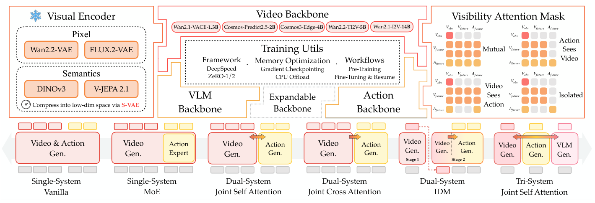
原图阅读方法。 从上往下读图2：上半部分列出可替换的视觉编码器、视频/动作/理解骨干与注意力掩码；下半部分列出把这些部件组合起来的六种架构。一个配置选择具体模块，执行规则负责组织各模块前向计算，训练器和服务端尽量通过共同接口调用它们。模型参数仍放在相应骨干中，执行规则不需要为每一种骨干复制整套训练框架。
1.2 一个“拿起杯子”的例子
假设当前图像里有一只杯子，任务文字是“把杯子放到盘子上”，状态向量告诉模型机械臂与手当前在哪里。你希望接下来 32 个控制时刻得到末端目标、朝向与夹爪或手指目标。同时，如果真的按这些动作运动，未来画面应该显示手靠近杯子、抓住杯子、杯子随手移动。
普通动作生成模型可以只拟合这 32 步动作。OpenWAM 额外学习未来视觉变化，并让动作分支读取视频分支正在形成的中间表示。这样，训练目标要求内部表示同时服务于“未来会看到什么”和“应该如何行动”。例如杯子的空间位置、抓取后相对关系和机械臂的运动，都可能成为两种预测共同需要的信息。这是设计动机；真正是否学到这些具体概念，要靠实验和分析证明，不能仅从一张架构图断言。
用概率符号，可以把 α 的目标直观写成：
这里 是未来视觉的 latent 表示， 是连续动作块， 是当前观测， 是指令， 是当前状态。这个式子描述要学习的条件联合分布，不是说当前实现显式计算了它的概率密度；源码训练的是 flow matching 的速度回归损失。
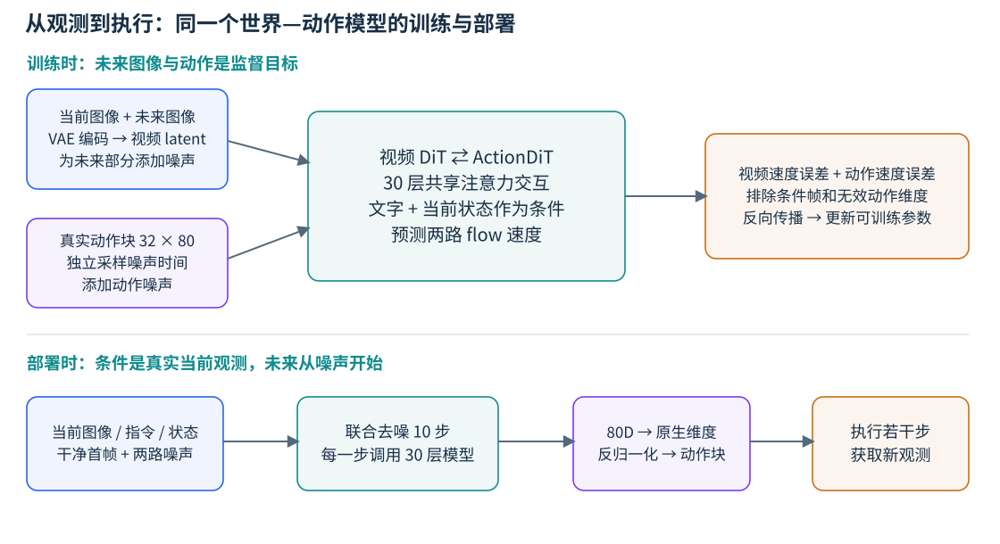
未来 RGB 解码在控制路径可以关闭，视频 DiT 的 latent 计算仍然存在。也就是说，省去“把预测表示变成可观看视频”的步骤，可以降低计算开销；动作生成依然利用视频分支。两者在工程上是不同操作，不能把 decode_video=false 解释成“删除世界模型”。
1.3 条件、监督目标、正在生成的量，要分别看
下表针对同时具有动作与状态标签的机器人样本；人类纯视频样本缺少这两类标签，其mask与间接梯度将在后文单独说明。
| 对象 | 训练时 | 部署时 |
|---|---|---|
| 当前多相机画面 | 真实条件，编码成干净首帧 | 真实条件，编码成干净首帧 |
| 任务文字 | 真实条件，编码成上下文 | 相同语义格式的指令条件 |
| 当前机器人状态 | 真实条件，经归一化与槽位映射 | 真实测量，经相同变换 |
| 未来视频 | 真值编码后加噪，作为去噪监督 | 从噪声初始化，由模型生成 |
| 未来动作 | 真值加噪，作为去噪监督 | 从噪声初始化，由模型生成 |
训练中看到加噪的未来真值，是去噪学习的构造方式。噪声很大时输入几乎不提供未来答案，模型要依靠条件和学到的先验；噪声小时输入提供粗略答案，模型学习细化。部署从完全噪声开始，一步步进入模型训练覆盖过的噪声范围。不能把训练时的监督信息当成机器人运行时可以取得的未来观测。
1.4 最容易混淆的三种“时间”
第一种是环境时间：机器人在 时刻运动，视频和动作按采集频率记录。第二种是去噪时间：对同一段未来，模型从噪声逐步生成答案；这是计算过程的进度，不是机器人又执行了一步。第三种是Transformer 层号：一次速度预测要经过 30 层特征变换，每层都针对同一个当前噪声状态。
因此，标准设置里的“32 步动作”“10 步去噪”“30 层交互”分别位于三个不同坐标轴。未启用速度复用时，一次动作块生成可以理解为 10 次速度估计，每次估计都经过 30 层，每次都同时处理完整的 32 个动作 token。它没有把第 1 层当作第 1 个动作，也没有用第 1 个去噪步骤只生成第 1 个控制时刻。
1.5 用原图12定位整套 α
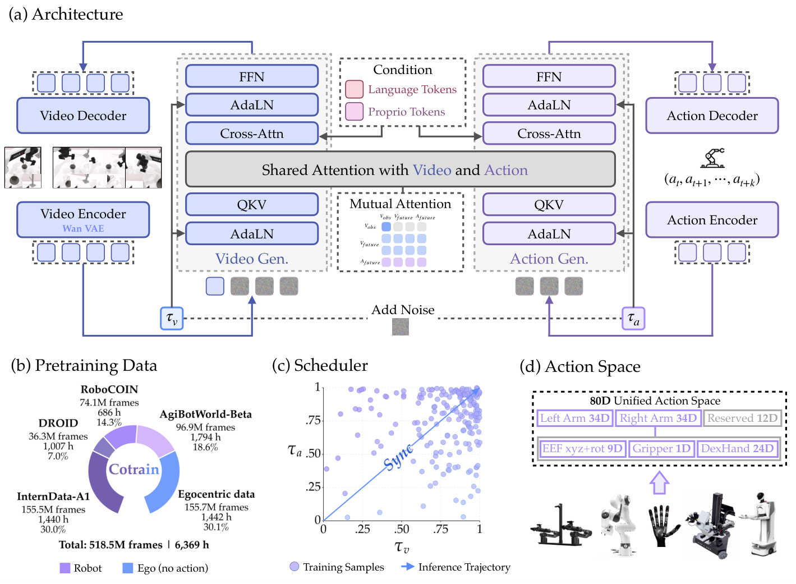
图12(a)左侧是视频分支，右侧是动作分支，中间是两者共同参与的注意力；文字与状态由各分支的 cross-attention 读取。下方的噪声时间控制每路输入的噪声水平。图12(b)说明异构数据共训，图12(c)画训练噪声状态与推理路径，图12(d)说明多种机器人如何共用动作槽位。原图为了表达总体机制省略了不少张量变形，后面的自绘图会补上准确的形状与执行顺序。
架构选项可以在 dual_system.yaml:1 中直接对应。最主要的 α 选择是：
architecture:
framework: dual_system
variant: joint_self_attn
action_dim: 80
state_dim: 80
use_proprioception: true
attention_mask_mode: mutual
video_attention_mask_mode: first_frame_causal
bridge_interval: 1
这段配置中，action_dim 是每一个动作的坐标数量；state_dim 是当前状态向量的宽度；bridge_interval=1 表示所有配对层都参与跨流交互。它们都不是视频 token 数量或注意力头数。视频骨干和动作骨干由另外的配置组提供，分别控制参数规模、隐藏宽度和各自噪声时间变换。
1.6 学完以后，你应该能亲手回答什么
读完报告应当能够：给出标准输入每一步的形状；手算一行 masked attention；解释 Q/K/V 投影与 FFN 的分工；画出一个双流层的前向与梯度路径；把论文的 换成代码的 ；计算一次 Euler 去噪；说明为什么有 80D 槽位、哪些坐标应该 mask；追踪一个 WebSocket 请求到物理动作的完整路径。最后的自测题会让这些能力落实到具体问题，而不是只记住模块名称。
02 数据、视觉编码与统一动作：把真实轨迹变成模型能学习的对象
这一部分沿着数据流解释模型的输入究竟是什么。读网络结构时，很容易把所有东西都概括为“图像 token”和“动作 token”；真正复现或迁移模型时，最常见的问题却出在这些 token 形成之前：时间有没有对齐，动作是命令还是观测，坐标系有没有改变，缺失的手臂如何表示，归一化是否与部署一致。张量形状正确，只能证明程序可以运行；物理意义和时间意义正确，才使学习目标成立。
2.1 一段示范如何形成一个训练样本
论文附录 B、表 9 的 α 配置使用 num_frames=33、video_stride=4、window_stride=1。这里有三个不同概念。num_frames 是原始数据时间轴上的窗口长度；video_stride 是窗口内部读取视频的间隔；window_stride 是相邻训练窗口起点的间隔。假设一条轨迹从原始时刻 0 开始，首个窗口覆盖 0 至 32，第二个窗口覆盖 1 至 33，第三个窗口覆盖 2 至 34。窗口大量重叠，因此一个 epoch 中的训练样本数既不是独立轨迹数，也不是互不重叠视频片段数。
在一个从 开始的完整窗口里，视频读出以下九个时刻：
模型同时预测 32 步动作。动作维持源数据原始频率，不能跟着视频一起每隔四步抽一次。这样设计让世界流用较低视频帧率覆盖整个动作块，动作流仍能描述较细的控制变化。否则模型每秒能输出的控制点会减少，快速接触和精细手指运动就可能被跳过。RoboTwin 窗口定义:347明确区分原始时间长度、视频采样索引和动作步数。
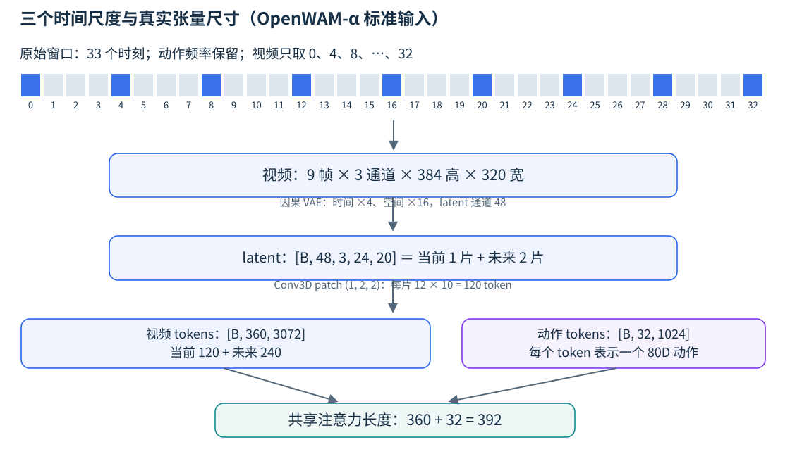
“32 步”还不是固定的秒数。按论文表 4 的源 FPS 计算，动作块覆盖的物理时长约为：
| 源数据频率 | 32 个控制间隔对应时长 | 每隔四步采样的视频频率 |
|---|---|---|
| 10 Hz，DROID | 3.20 秒 | 2.50 帧/秒 |
| 15 Hz，AgiBotWorld-Beta | 2.13 秒 | 3.75 帧/秒 |
| 30 Hz，RoboCOIN / InternData-A1 | 1.07 秒 | 7.50 帧/秒 |
| 20 Hz，本地 Bench2Dex task 86 | 1.60 秒 | 5.00 帧/秒 |
表中的时长是 ，不是 ：33 个观测时间点之间有 32 个间隔。不同来源保留自己的时间尺度，所以同一个动作 token 索引不能自动理解成统一的“第几毫秒”。在新机器人上部署时，执行频率也属于数据契约的一部分；把按 20 Hz 示范学到的绝对目标序列改成 100 Hz 执行，会改变运动速度与接触过程。
还要区分“未来动作”的逻辑意义与文件里的数组下标。 如果日志每行记录“当前状态，以及接下来要发出的命令”，合理的监督通常是 state[t] 配 commanded[t:t+32]；如果读取器将时间序列位置本身作为下一位置目标，则可能取下一行开始的值。当前 RoboTwin 读取实现:747约定 proprio=raw_actions[0:1]、action=raw_actions[1:num_frames]。本地 Bench2Dex α 读取实现:334则从当前行读取命令，同时单独读取当前实测状态。两者都能形成 的动作张量，区别来自记录语义。不能看到“32 步未来动作”就机械地将所有数据源右移一帧。
轨迹末尾可能不足 33 行。RoboTwin 读取器用末帧和末动作补齐张量长度，同时用 mask 标出真正有效的位置。补齐与有效性构建:778说明，补齐解决的是批处理形状问题；监督损失应排除不存在的未来，不能把人为重复的末帧当成真实的静止示范。
2.2 多相机如何进入一个视频骨干
α 使用一张高 384、宽 320 的 RGB 画布容纳多视角观测。上方主视角占 ，下方左腕与右腕视角分别占 。在各时刻，先把三张相机图放到这三个固定位置，再将九张拼图视为一段普通视频输入 VAE。
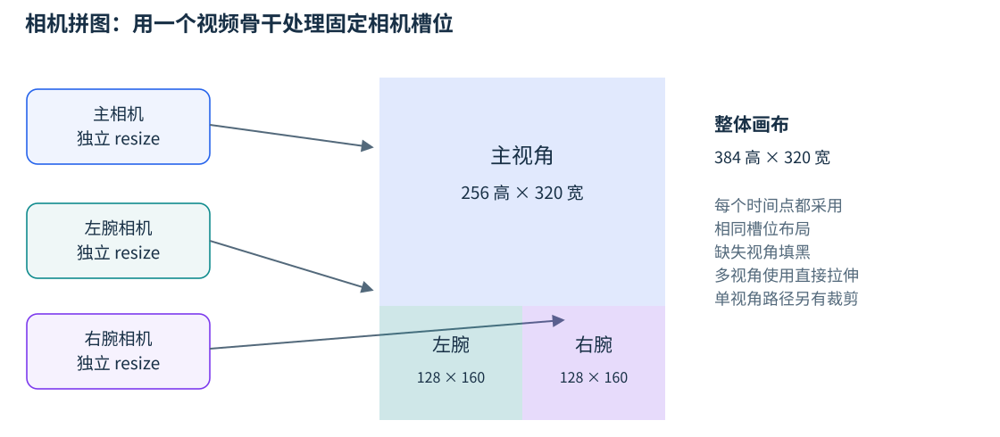
这样可以直接使用现成的视频生成模型：视频骨干看到的是固定布局的“合成视野”。腕部图有利于描述近距离抓取、对齐和手指接触，主视角提供物体布局与机器人整体状态。网络可以通过注意力关联不同区域的信息，但这种拼接本身并没有执行几何三角化，也没有自动建立带标定参数的三维地图。它提供的是可学习的多视角视觉输入。
这里有一个源码细节：多视角的 assemble_multiview_layout 使用 BILINEAR 直接缩放到槽位大小，允许轻微拉伸，不保持每张源图的宽高比。单视角读取路径的 crop_and_resize 才采用保持比例的缩放与中心裁剪。两者都在 multiview.py:23，具体多视角契约见其 63 行:63。因此，部署时应复用训练采用的相机顺序和缩放方法；交换左右腕相机，会改变每个空间 token 所对应的物理视角。
缺失视角用黑色区域填充。“没有该相机”和“该相机确实拍到黑色物体”是两种状态；工具支持额外返回缺失区域 mask，以便颜色增强等操作识别结构性填充。不能简单把所有黑色像素都当作缺失数据。
2.3 9 张视频图为什么变成 3 个 latent 时间片
VAE 可以理解为一套已训练好的“压缩器与解压器”。编码器把像素变成较小的连续特征张量 ，解码器从 尽量还原视频。α 的生成模型在这个连续空间中预测未来，使每一步注意力不必直接处理数百万个 RGB 数值。
α 采用 Wan2.2 TI2V 5B 配套的 VAE。它的 latent 通道数为 48，空间上每个方向压缩 16 倍，时间上使用“保留首帧、其余每四帧产生一个 latent 时间片”的因果结构：
于是带 batch 维的形状变化是：
空间压缩 16 倍是 Wan2.2 这一 VAE 的参数，不能沿用 Wan2.1 的空间压缩 8 倍。仓库在 VAE 包装器:97专门注明两种配置；实际 WanVideoVAE38 在 vae.py:1387设置 upsampling_factor=16。
首个 latent 时间片只依赖第一张图，因而可以作为部署时已知的干净观测。后面时间片编码未来视频。这里的“每四帧一组”描述输出时间尺度与编码执行方式，不表示每个 latent 仅依赖互不相干的四张图：因果卷积的缓存允许后面的编码继承前面的历史。源码 vae.py:1226先处理首帧，再分组处理后续帧，并维护 feat_cache。
这也解释了训练为什么可以把九张真实图交给 VAE，而部署只给当前一张图：未来 latent 是训练目标，干净首帧是条件。只要首帧编码没有偷看未来，它就能在推理时独立取得。未来视频必须由模型从噪声生成，不能从训练数据里直接拿来当推理条件。
尽管名字中有 “Variational”，这条预训练 VAE 编码路径并不是每次从后验里再采一份随机 latent。源码从编码器输出中取 mu 并用预设的通道统计量进行标准化。WAM 训练时额外加入的高斯噪声，是 flow matching 目标的一部分。区分这两处随机性，有助于理解为何同一真实视频首先对应一个确定编码，再按不同噪声时间形成不同训练输入。
2.4 从 latent 到 token：实际只有 360 个视频位置
视频 DiT 接下来用 的三维 patch embedding。它不再减少时间片数量，而是把每个 latent 时间片上的 空间块合成一个 token。单个 patch 有 个输入数值，经可训练投影变成 3072 维隐藏向量。这里“token”只是一个连续向量，没有把图像量化成语言模型那样的离散词编号。
因此 α 这一配置下的视频 token 数是
其中 120 个属于干净首帧，240 个属于未来两个 latent 时间片。再与 32 个动作 token 联合注意力时，拼接后的主序列长度是 。文本与状态条件通过另外的 context 注意力读取，不能无条件计入这 392 个视频—动作自注意力 token。patch 卷积定义见 dit.py:352，展平顺序见 wan_backbone.py:421。
一个 token 在网格上对应原图约 的步幅，因为 VAE 的 16 倍压缩再乘以 patch 的 2 倍；它的实际感受野还受卷积影响，通常超过这一网格单元。不要把“网格步幅”直接说成“此 token 只看过原图这 32×32 个像素”。
从注意力开销看，压缩非常有价值。若对 个位置进行全注意力，每个 head 的两两关系有 项。空间宽高各减半使 token 数降到四分之一，两两关系数量则降到十六分之一。另一方面，压缩不能无限增加：如果丢掉细小的手指接触、物体边缘或相对位置，动作就失去所需信息。论文所强调的“紧凑且信息丰富的 latent”，就是在计算成本与可控制信息之间寻找平衡。
03 统一 80 维动作空间：统一接口，同时保留物理意义
3.1 为什么不能直接把不同机器人的数组拼在一起训练
一个夹爪机器人可能用“末端位置 3 维、姿态 3 维、夹爪 1 维”；另一个双臂机器人有两套末端位姿；灵巧手又多出几十个手指关节。如果只是把短向量补零到同一长度，同一索引可能在样本 A 表示左臂 ，在样本 B 表示右手食指角。共享动作头会被要求把不同物理量写进同一个输出通道，学习变得困难。
α 给输出通道约定统一槽位：
| 0 起始的 Python 切片 | 维数 | 物理语义 |
|---|---|---|
0:3 |
3 | 左末端位置 xyz |
3:9 |
6 | 左末端朝向 rot6d |
9 |
1 | 左夹爪 |
10:34 |
24 | 左灵巧手关节 |
34:37 |
3 | 右末端位置 xyz |
37:43 |
6 | 右末端朝向 rot6d |
43 |
1 | 右夹爪 |
44:68 |
24 | 右灵巧手关节 |
68:80 |
12 | 预留通道 |
状态 proprio 也使用 80 维接口。官方 α 微调指南:46定义这些槽位，并约定归一化后的夹爪 为完全关闭、 为完全打开。80 是接口宽度，不表示每台机器人必须控制 80 个独立自由度；rot6d 的六个数描述的是三个旋转自由度，也不是六个电机。
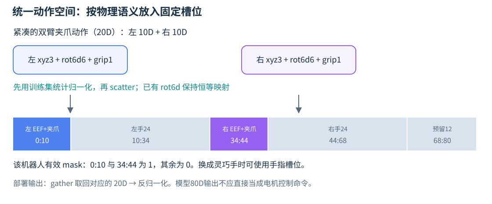
3.2 scatter、gather 和 mask 的具体计算
scatter 可以理解为“按地址把值放进去”。设一个单臂样本已被转成紧凑的 10 维向量，并且在归一化后为：
前三个数是位置，接下来六个数为单位旋转的 rot6d，最后的 表示夹爪闭合。把它映射到左臂槽位 0:10 后，得到一个 80 维向量：前 10 维保留这些数，其余 70 维为零；对应 mask 前 10 维为 true，其余为 false。如果数据源将单臂约定到右侧，则应写入 34:44，并在训练、状态输入与部署全过程保持同一约定。
双臂夹爪紧凑向量通常是 [左10维,右10维]。映射数组为 [0,…,9,34,…,43]。一个原生第 10 维，即右臂 x 值，会被放到统一第 34 维。部署时的 gather 做相反操作：按同一索引列表，从 80 维预测中依次取出有效 20 维，再还原单位。实现 map_to_unify:183与 unmap_from_unify:215就是这一散射和收集过程。
映射操作本身不会理解“左臂”或“毫米”。代码刻意只负责索引与形状检查；正确语义由读取器、配置、转换和控制端共同提供。这里还有一个易错语法：文档里的 Python 切片 0:9 不含 9；YAML 映射字符串 "0-8" 则是闭区间，包含 0 和 8。两者都表示九维。
填零不等于给模型一个“保持不动”的命令。 未使用槽位的零是结构性占位，mask 才说明它没有监督标签。否则一个只具备左臂的数据集，会不断惩罚模型的所有右臂输出，把它训练成零，从而干扰双臂任务。
对每个样本，设 同时表示时刻 与通道 是否有效，则动作损失的基本平均方式是：
再乘该样本噪声时间对应的权重，最后对 batch 取平均。这里 是 flow matching 的速度目标，不必等于干净动作本身。源码 base.py:1254按有效单元数量归一化，因此只有十个有效通道的机器人不会因为其余 70 维空白而把损失缩小八倍。若某个人类视频样本所有动作 mask 都为零，动作损失为零。
动作有效性 mask 与注意力 mask 必须分开理解。前者决定哪些数值进入监督；后者决定 token 之间能否交换信息。当前实现把 action_is_pad、video_is_pad 留在损失侧，联合前向前将它们移除，见 base.py:1136。因此不能把“动作标签全部 masked”直接解释成“把整条动作流从网络中删除”。零占位动作还可能在 flow matching 加噪后变成有噪输入；双向耦合时，视频损失也可能经过动作分支传播梯度。准确说法是：人类视频没有直接的机器人动作监督。
3.3 归一化为什么影响优化，而不只是单位换算
假设一个位置坐标以米计，变化范围为 0.20 到 0.60；另一个手指角以弧度计，变化范围为 0 到 1.50。如果对所有原始分量直接用同一 MSE，相同相对误差可能产生很不同的损失量级。归一化让这些量进入相近数值范围，便于统一噪声尺度和优化。
α 下游微调指南指定的 min-max 变换为：
若位置范围为 米， 米，则归一化为 。预测 的反归一化结果为 米。超出统计范围的输入会被截断，因而“归一化后再反归一化”对超范围值不是严格可逆操作。代码使用小的分母下限处理接近常数的通道，防止除零。
当前公开预训练配置的四个机器人源采用 quantile，见例如 RoboCOIN 配置:51。它将 min、max 换成 、，再截断到 。可以把它理解为：由主体数据的范围决定缩放，极少数异常极值不再压缩绝大部分正常值。比如 99% 的位置增量落在 ，但一个异常记录写成 10 米，普通 min-max 会让正常动作挤进极小区间；分位数缩放对这种极值更稳健，但也会牺牲尾部幅度的精确表示。
这两种实现见 normalization.py:82。应分别陈述“当前公开机器人预训练配置使用 quantile”和“官方 α 微调契约指定 min-max”。论文表 9 本身没有提供足以证明全程只用同一种归一化的细节，不能用其中一份 YAML 反推所有论文实验。
统计量应仅从训练集计算，并随 checkpoint 一起保存。动作命令与实测状态的分布可以不同，应按数据源设计相应统计量。通常先对原生有效向量归一化，再 scatter 到 80 维，这样未使用槽位仍为零；输出时先 gather，再反归一化。若先填零，再把所有空槽一起按非对称 min-max 变换，空槽可能变成非零，破坏缺失通道的约定。
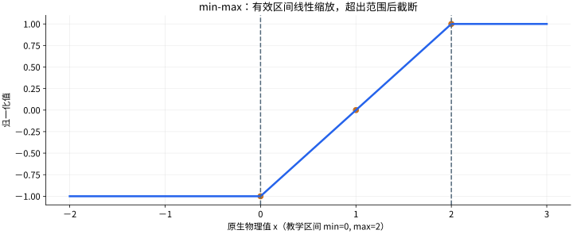
3.4 rot6d：六个数怎样表示一个合法三维旋转
旋转矩阵 可以理解为一个物体的局部 x、y、z 三根单位轴，在参考坐标系里的朝向。三根轴互相垂直，且遵守右手规则，所以记录前两根轴已经可以通过叉乘恢复第三根。OpenWAM 的 rot6d 恰好依次拼接旋转矩阵的第一列、第二列：
这里的顺序非常具体。例如单位旋转的表示为 ，绕 z 轴旋转 的表示为 。把前两列矩阵直接按默认行顺序 reshape，一般会得到另一种排列；必须核对实现。rotation.py:101明确使用按列提取后拼接。
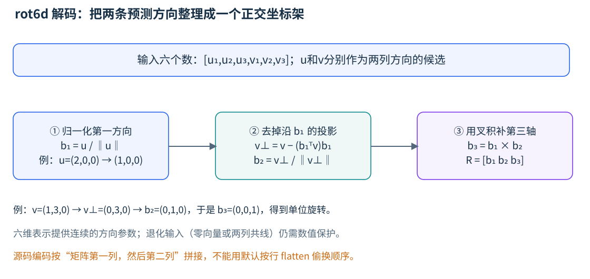
模型直接输出的六个数通常不满足正交单位约束。因此部署时通过 Gram–Schmidt 将它们恢复成旋转：
第一步给第一根轴规定单位长度；第二步剔除第二根轴与第一根轴重合的分量；第三步把剩余的垂直方向变成单位轴；最后以右手规则补齐第三根轴。源码 rotation.py:65就是这些计算，并对分母设置数值下限。
使用 rot6d 的动机可以从角度的环绕理解： 与 很接近，但直接回归角度时数值相差 ；欧拉角还会遇到奇异位置，四元数则有 与 表示同一旋转的问题。rot6d 提供连续、便于回归的冗余表示，合法目标本身落在六维空间的受约束子集内。它不表示任意六维预测都天然合法；当预测的第一向量近零，或两向量近乎平行时，正交化会不稳定，分母下限只能避免数值除零，不能凭空补出准确朝向。
rot6d 的每个分量天然在 ，两个三维向量又在几何上相互关联。若逐分量用数据统计量拉伸，单位向量结构会被改写，回归各方向的权重也会改变。α 因此固定 rot6d 的 min/max 为 ，使 min-max 成为恒等映射；quantile 和 z-score 的对应统计量也可固定为恒等值。规则见 pin_rot6d_identity:58。这一步要对状态和动作都应用。
3.5 统一槽位不自动统一控制语义
需要依次回答四个问题：位置相对于哪个坐标系；数值是绝对目标还是增量；姿态增量左乘还是右乘；这个向量是命令还是实际测量。它们不会因为向量变成 80 维而消失。
对平移，绝对目标可以是 米；增量动作可以是 米，并由控制器计算 。对旋转，绝对目标是 ，相对旋转则可能按世界系左乘 ，或按工具系右乘 。矩阵乘法通常不交换，左右乘不能混用。
此外，实测 和命令 往往不同。因为控制器需要时间响应，机器人可能因惯性、接触、限速而尚未达到目标。把下一帧实测状态当作命令，会把这些动力学和跟踪误差混进标签；把命令当作当前状态，又会向策略提供机器人并未真正到达的位置。因此迁移数据时，必须先确定记录契约，再做 FK、旋转转换与归一化。
80 维接口的价值，是把相近的身体部位和控制量放到可共享的位置，并允许保留预训练投影。它仍要求源数据转换和部署控制器就上述语义达成一致。模型产生末端目标后，实际机器人可能还需要 IK、轨迹插值、关节限位处理或底层位置控制；这些工程环节也会影响最终动作表现。
04 从向量到注意力：先读懂模型在计算什么
这一部分把 OpenWAM-α 的双流 Transformer 拆开到基本运算。读完后，我们希望能具体回答：一个动作 token 怎样查阅视频信息；两个宽度不同的网络怎样做同一次注意力；文字、机器人状态、去噪时间分别在哪里进入；一条动作监督信号怎样反向改变视频网络的参数。
为避免符号混淆，本章用 表示视频流的隐藏特征， 表示动作流的隐藏特征， 表示机器人本体状态。注意力中的查询、键和值写成大写 。这里的 是 value，不等于 video；去噪的“速度”也不是这个 。 机器人序列中的实际时间位置、扩散/流匹配的噪声时间、Transformer 层号，是三条不同的轴。
4.1 张量的三个基本轴：样本、token、特征
模型不直接把“夹起杯子”作为一个可运算的概念。它接收数字，将数字反复变换。一个机器人动作可以包含末端坐标、旋转、夹爪开合量等；统一后，每一步是一个 80 维向量。一个 batch 中有 个样本，每个样本预测 32 步动作，因此动作输入形状为
三个轴各有自己的作用： 是本次一起计算多少条样本；32 是一条样本里有多少个动作位置；80 是每个位置用多少个数字描述。两条不同样本之间不会做注意力。增加 batch 通常增加吞吐量和显存占用，不会让样本 1 的动作读取样本 2 的图像。
“token”可以理解为网络中的一条记录。文本 token 通常对应词片段，动作 token 在这里对应一个完整动作时刻，视频 token 对应一个时空 latent patch。token 不是一个标量；每个 token 都携带一个向量。 也不要把“80 维动作”理解成 80 个动作 token：OpenWAM-α 是 32 个 token，每个 token 在输入端包含 80 个动作分量。
输入动作经过线性层后变成
“线性层”做的是可学习的加权求和。例如隐藏分量 。它可以同时利用位置、旋转、夹爪等多个输入分量。1024 维是内部的表示容量，并不意味着机器人新增了 944 个真实控制通道。数学里这里按行向量写 ；PyTorch 的 Linear 存储权重为 [out_features, in_features]，计算时转置，二者是同一运算。
同一线性层作用于 32 个时刻：参数共享，但输入不同，输出也不同。只有线性层时，各时刻仍互不交流；token 间的信息交流由 attention 完成。实际动作输入层就是 nn.Linear(action_dim, dim)，没有在这里另设一个动作 VAE。源码：动作输入与上下文投影:423。
4.2 把 α 的实际形状算一遍
以论文的 画布、9 张采样图像、32 步动作为例。下表把图像写成通道优先格式， 表示高度， 表示宽度。
| 阶段 | 形状 | 每个数字的含义 |
|---|---|---|
| 输入视频 | RGB、9 个采样时刻、画布高和宽 | |
| Wan2.2 VAE latent | 48 个 latent 通道、3 个 latent 时间片、空间各缩小 16 倍 | |
| patch 后 | 每个 latent 空间 块投影到 3072 维 | |
| 展平为视频 token | 个 token | |
| 输入动作 | 32 个动作时刻，每步 80 维 | |
| 动作 token | 动作残差流宽度 1024 | |
| 联合注意力内部 | 24 个头、 个位置、每头 128 维 |
这里的 360 是由 α 的 VAE 和分辨率算出的具体数量，不是所有 OpenWAM 配置都固定如此。Wan2.2 的这套 VAE 空间压缩为 16 倍，不能套用其他 VAE 的 8 倍压缩率。48 通道及压缩因子可见 Wan2.2 VAE:1279 与 空间压缩设置:1388。骨干的 3072 维、24 头、30 层和 patch 设置见 Wan2.2-TI2V-5B 参数:435。
视频 token 也不是原图中某个 小方块的像素原样复制。VAE 先用卷积和时序处理把邻域信息编码为 latent，patch embedding 再做局部投影。因此 token 有对应的空间格点和一定的感受野，其内容是学习到的特征。第一 latent 时间片保留当前观测的锚点；后两个时间片包含后续视频的压缩信息。32 个动作位置和 3 个 latent 时间片不等长，也不需要逐个一一对应。[论文 §5.1.1，p18]
4.3 Attention：为当前记录，从其他记录中取回有用内容
对一个动作 token 来说，它已经带有“第几步”的位置信息，以及这一轮去噪中当前的动作猜测。它还需要利用图像中的物体位置、其他动作时刻、正在形成的未来视觉表示。Attention 实现一种可学习的检索：当前 token 产生查询 ；每个可读 token 提供键 和内容 ；查询与键的匹配程度决定取多少内容。
对单个注意力头，设有 个查询、 个可读位置，每个查询和键为 维：
忽略 batch 和头的轴，一次 attention 的完整公式是
是“查询 对位置 的匹配分数”， 是归一化后的权重， 是返回给查询 的结果。 在允许读取时为 0，禁止读取时为 ，让禁止位置的 softmax 权重变成 0。源码实际传入的是布尔 mask：True 表示允许读取，再由 PyTorch 的 SDPA 完成等价处理。
关键是：输出有多少行，取决于查询有多少行。 一个动作查询可以读取几百个视频 token，但结果仍只返回这个动作位置的一条向量。因此 attention 可以在输入序列长度不同的模块之间传递信息。
“查询、键、内容”是便于理解的类比。网络没有被硬编码为“第 7 头负责杯口、第 12 头负责夹爪”。 来自训练得到的矩阵投影，它们的功能是由损失逐步塑造的；中间某个维度通常不能直接翻译成一个人类概念。
4.4 一个能手算的 Q/K/V 例子
本小节的小写 仅表示一条attention查询，与前文的机器人状态 无关。现在只看一个查询和三个可读位置，令每头维度为 2。为清楚展示 attention 本身，假定投影、归一化、位置旋转都已经完成，送入 attention 的数字如下。它们是教学数字，不是从模型中抓取的激活值。
第一步，逐个做点积。，，。同方向的向量得分高；正负抵消则接近 0；方向相反得分低。除以 后，得到
第二步，对这一行做 softmax。先指数化，得到约 ；总和约为 ；分别除以总和，得到
三个权重之和为 1。第三步，用它们加权 value：
模型没有简单选出第一个 token，而是形成了混合结果。第三个位置权重虽然小，其 value 数值较大，仍会影响输出。因此可视化 attention 权重只能帮助观察信息读取，不能单独证明某个 token 对最终行为的全部贡献。
如果第三个位置被 mask，则分数变为 ，归一化后的权重约为 。权重会在剩余允许位置之间重新分配，而不是直接把原来的第三项删掉后保留前两项。这也是为什么改变 mask 会改变模型计算，影响不仅限于新增或移除的那条连边。
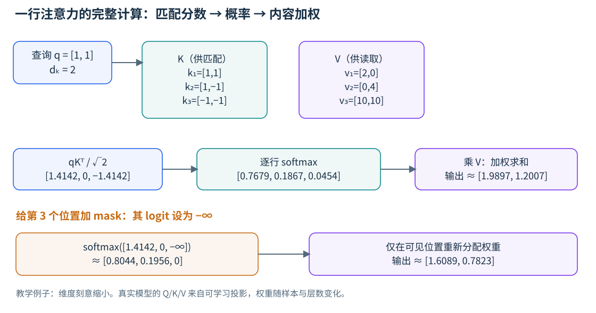
4.5 为什么除以 ，为什么需要多头
假设 和 的分量大致独立、均值为 0、方差为 1，那么 的方差约为 。维度越大，点积分数的典型幅度越大。softmax 对输入差距很敏感： 产生约 ， 产生约 。如果训练一开始就大量进入后一种极端状态，概率几乎只落在一个位置，许多方向的梯度会很小，优化更困难。
除以 把点积的典型尺度拉回较稳定的范围。这是初始化附近的统计解释，不是宣称训练中每个分量始终独立正态。OpenWAM 还对 做 RMSNorm，进一步控制尺度；RMSNorm 与 在计算中同时存在。
一个 attention 头只有一种权重分布；多头允许同时建立多种信息聚合方式。第一个头可能更利用近处接触信息，另一个更利用整段轨迹关联，但这只是解释功能可能如何分工，具体分工需用实际激活验证。数学形式是
α 每头 128 维，24 个头并行计算，拼接后为 3072 维。每个头都可以读取全部被 mask 允许的 token；不是把 392 个 token 分成 24 份，让每个头只能看到其中一份。头划分的是特征轴，不是序列轴。拼接后的输出投影 将不同头的结果重新组合。
4.6 Self-attention 和 cross-attention 的区别
Self-attention 从同一组当前 token 产生 。在普通动作 self-attention 中，32 个动作 token 都能给其他动作 token 提供键和值，因而后面的动作可以影响前面的动作表示。这很适合同时修正一整段轨迹：第 20 步要去的地方，会影响第 5 步应采取的运动趋势。
Cross-attention 的查询来自正在更新的流，键和值来自另一组上下文。例如动作流读取任务指令：，，。若动作有 32 个位置、文字和状态共 个上下文 token，则每个头的注意力权重矩阵是 ，输出仍是 32 个动作位置。此次 cross-attention 更新动作流，输入上下文不会因此被逐 token 重写。
OpenWAM-α 的联合 attention 在计算形式上对“视频和动作拼成的序列”做 self-attention，不过两种模态拥有自己的投影矩阵。它内部自然包含视频读视频、视频读动作、动作读视频、动作读动作四种子计算。随后，两路再分别做一次读取文字/状态上下文的 cross-attention。这两次 attention 的来源和作用不同，不能把它们合并想象成只做了一次“看所有东西”。
05 异构双流怎样共享一次 attention
5.1 1024 和 3072 为什么可以相互注意
动作流保留 ，视频流保留 。这两个张量不能直接沿 token 轴拼接，因为特征维不一致。源码先分别投影：
为突出形状，上式暂略去前置 LayerNorm、时间调制、bias、 的 RMSNorm 和 RoPE；实际顺序会在后面给出。经过这些投影，两路的 最后一维都等于 3072，于是可以沿序列轴拼接：
每个头中，点积矩阵有四个块：
行表示“谁在查询”，列表示“读取谁”。右上角是视频查询读取动作；左下角是动作查询读取视频。这一点是阅读 mask 图最容易弄反的地方。
一次联合 attention 输出 。driver 按最初的长度拆成 和 ；视频用自己的 输出投影，动作用自己的 输出投影，再回到各自残差流。这就像两支团队各自保留自己的工作表，只在交换信息时转换成统一格式。
代码没有先把所有动作永久升为 3072 维残差流，也没有把视频长期压缩成 1024 维。共享的是注意力空间，两套网络的残差宽度、投影、FFN 和上下文投影仍然独立。 动作侧异构投影:92；拼接、混合注意力、拆分:217。
论文把这种组织方式放在双流架构下，代码 driver 名称中的 MoT 是 Mixture-of-Transformers。对 α 而言，视频和动作的全部 30 对层都会参与，不存在“根据 token 只路由到少量专家”的稀疏 MoE 门控。不能看到名字中的 Mixture 就推断其具备稀疏专家的计算节省。[论文 §5.1.1，p18]
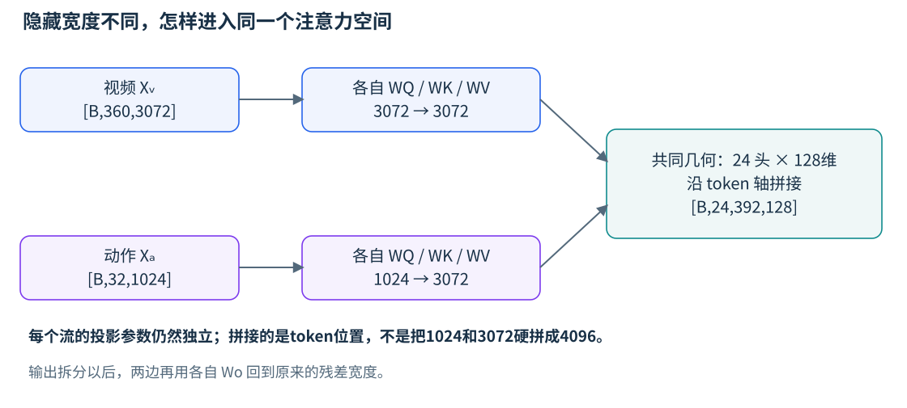
5.2 Mask 决定信息怎样流动
把视频 token 分成干净当前观测 和带噪的未来视频 ，动作记为 。α 使用 mutual，同时使用 first_frame_causal 视频掩码。其可见性可压缩为一个 表：
| 查询者 ↓ / 被读取内容 → | 当前观测 | 未来视频 | 动作 |
|---|---|---|---|
| 当前观测 | 允许 | 禁止 | 禁止 |
| 未来视频 | 允许 | 允许 | 允许 |
| 动作 | 允许 | 允许 | 允许 |
实际第一块是 120 个 token，第二块是 240 个 token，动作块为 32 个 token。表中的一个“允许”代表对应子矩阵允许全部连接，不是只有对角线连接。
干净首帧不能读取正在变化的未来与动作，这让当前观测这一条件锚点保持独立。未来帧之间、动作时刻之间则是双向可见的：当前生成的是一整段联合样本，而不是像语言模型那样按顺序吐出一个个 token。first_frame_causal 只保护第一帧；它没有要求第二未来片只能看过去而不能看第三片。 源码另有 per_frame_causal，那才是按视频帧块形成下三角可见性。视频掩码实现:228。
四种跨模态掩码的准确比较如下。
| 跨模态模式 | 动作读当前观测 | 动作读未来视频 | 未来视频读动作 | 当前观测读动作 |
|---|---|---|---|---|
isolated |
是 | 否 | 否 | 否 |
video_sees_action |
是 | 否 | 是 | 否 |
action_sees_video |
是 | 是 | 否 | 否 |
mutual，α 使用 |
是 | 是 | 是 | 否 |
因此 isolated 的“隔离”指未来世界流与动作流的隔离，动作仍然读取当前观测。若简写成“动作完全看不到视频”，就会误解实验设计：这项消融没有剥夺动作模型的当前视觉输入。准确规则:75。
另一个细节是联合 softmax 的归一化范围。mutual 下，一个动作查询的注意力预算在 360 个视频位置与 32 个动作位置之间共同分配。它不是先在视频内归一化、再在动作内归一化后各取一半。模型可以学会把绝大多数权重放在某种信息上，但具体比例由分数决定。mask 只规定合法的读取范围，不强迫模型一定大量利用某一流。
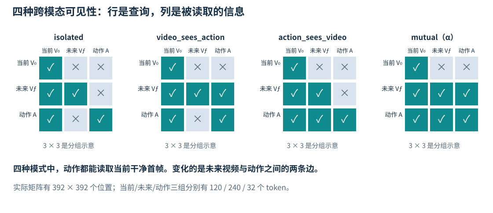
5.3 为什么没有“第 7 个动作只能看第 7 帧”
标准样本有 32 步动作、9 张图像和 3 个 latent 时间片，三者的采样与压缩粒度不同。模型用动作 1D RoPE 区分动作位置，用视频 3D RoPE 区分视频的时间与空间位置，再由 attention 学习何时读取何处。它没有硬编码一个 32 对 3 的对齐表。
例如第 5 步动作可能需要读取当前图像里杯把的位置，也可能读取较晚视频表示里预期抓取完成后的手部位置，来共同确定接近方向。训练数据里的同步监督会推动有用的关联形成。不过，这不等于每个 attention 头都显式恢复了物理时间或对应关系，也不保证预测的视频一定描述动作真实执行后的结果。时间位置编码、联合损失、数据覆盖共同约束这种一致性。
06 一层 DiT 的内部：Attention 以外还有什么
Attention 负责跨 token 聚合信息；一层 Transformer 还需要稳定数值范围、把去噪时间注入特征、对每个 token 做非线性计算，并保留已有表示。把这些部件弄清楚，才能理解为什么源码并不是一句 softmax(QKᵀ)V。
6.1 LayerNorm 和 RMSNorm 分别做什么
对一个 token 的 维向量 ，LayerNorm 首先计算它自己的均值和方差：
若启用可学习仿射参数，还会输出 。它让每个 token 的特征尺度相对稳定，减少前层数值幅度变化对后层的影响。这里归一化沿特征轴进行，不跨 32 个动作时刻求均值，也不把 batch 中的不同样本混在一起。
RMSNorm 用均方根代替标准差，不减去均值：
α 的实现把 LayerNorm 放在 attention 和 FFN 的输入处，并把 RMSNorm 放在投影得到的 上。 不经过这里的 RMSNorm。尤其要核对归一化的轴：动作和视频的 都先以 [B,S,3072] 形状做 RMSNorm，再分为 24 个头。因此，归一化覆盖完整的 3072 维，不是每个头各对自己的 128 维单独归一化。RMSNorm 还在 float32 中计算均方根，然后转回输入精度，以改善数值稳定性。动作 RMSNorm:64；调用顺序:795。
自注意力前和 FFN 前的 LayerNorm 设置了 elementwise_affine=False，因为随后的时间调制会提供缩放与偏移。文字/状态 cross-attention 前的 LayerNorm 保留自己的可学习 affine 参数。动作层定义:294。这三处 LayerNorm 的作用相近，参数形式并不完全相同。
6.2 残差连接：把本次修正加回已有表示
如果一层只输出新算出的 ，每层都得从头完整表达全部信息。残差连接使用 ，使子模块可以学习“在现有表示上增加什么修正”。求梯度时，有
其中 是保留旧表示的直接路径。这有助于训练多层网络，但不是“必然不会梯度消失”的数学保证。α 在联合注意力和 FFN 的残差上进一步乘以时间相关 gate：
是逐分量相乘；这里 gate 是一整条特征向量，不只是一个标量。源码没有对 gate 做 sigmoid，因此它不局限于 ，也可能为负。应把它理解成可学习的逐通道调节系数，不要直接解释为概率或某条信息被接受的百分比。gate 的真实定义:305。
6.3 FFN：每个位置上的非线性加工
FFN 是前馈网络。在动作侧，其形式为
视频侧为 ，同样使用 GELU(approximate="tanh")。GELU 是平滑的非线性函数，常写为 ， 为标准正态分布累积分布函数；实现使用 tanh 近似以便计算。FFN 的参数在同一层的各 token 间共享，但不同层有各自参数。
FFN 本身不把一个 token 的数值送到另一个 token；它处理的是 attention 已经聚合到当前位置的特征组合。比如 attention 把手与物体的相关信息带到某个动作位置，FFN 可以进一步组合这些信息，形成用于后层判断的非线性表示。“attention 交流，FFN 加工”是分工上的近似理解，不代表每个神经元都有可命名的功能。实际 FFN 定义:298。
6.4 AdaLN：让网络知道自己正在处理多少噪声
去噪过程早期输入很乱，后期只需细调。同一个 Transformer 必须知道本次输入处于哪个噪声水平。OpenWAM 先把噪声时间标量 编成正弦/余弦特征，再通过 MLP 得到时间向量。这里的 表示实现中的 scheduler 时间输入；论文用 表示干净端，源码的 TI2V 首帧时间为 0。在Wan/动作scheduler的1000尺度下，网络实际输入为 ；它与原图12(c)的归一化坐标也须区别。比较两者时要先转换约定。
动作时间路径使用 256 维正弦嵌入，随后 Linear → SiLU → Linear 得到 1024 维时间向量，再经 SiLU → Linear 产生 个数，reshape 为 [B,6,1024]。每个动作 block 再加上自己的可学习调制表。六项依次是
其中 是 shift， 是 scale， 是残差 gate。前置调制写成
“”让 scale 的零点对应保持原尺度。六项不是六个标量，而是六条特征向量。 同一个样本的 32 个动作 token 使用相同的动作噪声时间调制；动作序号的区别由 RoPE 表达。时间嵌入与调制:78；六项拆分:790。
视频侧使用自己的时间向量和参数，并允许每个 token 的时间不同：首帧对应 0 噪声，未来视频 token 对应本次抽样的 。因此视频时间调制可为 [B,360,6,3072]，而动作时间调制为 [B,6,1024] 后广播到 32 个位置。这里“每 token 有时间条件”不表示每个视频 token 都独立随机采样一个噪声时间；α 是首帧一组、未来一组。TI2V 首帧时间固定:35。
两路时间可独立，让网络区分“未来图像还很模糊但动作接近确定”和“动作很乱但世界表示较干净”等情况。AdaLN 就是把这种状态传到每层计算中的具体接口。
6.5 RoPE：让 attention 知道位置和顺序
如果没有位置信息，仅把 32 个动作 token 交换顺序，attention 的计算会相应交换，无法凭空知道哪个应该是第 1 步。RoPE 在计算点积之前，根据位置旋转 的成对特征。
对一对二维分量，用位置 和某个频率 定义
键也做同样旋转。由于 ，旋转后的查询与键的点积会带上相对位置 的信息。二维旋转本身保持向量长度；它通过改变两向量的相对方向影响匹配分数。实际使用多组频率，不同通道对提供不同尺度的位置信号。
动作侧每头 128 维分成 64 对，按动作索引 施加 1D RoPE。视频侧将每头通道分给时间、高度、宽度三组，按 分别旋转。按照此仓库的 128 维划分，时间使用 44 维，高和宽各使用 42 维，对应 22、21、21 对。不同空间位置即使图像内容相似，也能具有不同的查询/键表示。3D RoPE 分配:103；动作 RoPE 应用:46。
RoPE 施加于 ，不施加于 。文字/状态的 cross-attention 在这里也没有额外采用这套动作或视频 RoPE；它读取的是已经由文本编码器和独立上下文投影处理的 context。
上面的“相对位置差”推导最直接适用于使用相同旋转规则的同模态位置。跨模态时，一边是动作的一维索引，一边是视频三维网格，不能把它们的点积解释成单一物理时间差。跨模态对应由两边可训练的投影和共同训练学到。也就是说，RoPE 给出可用的坐标线索，attention 学习如何利用这些线索。
07 从输入到输出，完整走过一对双流层
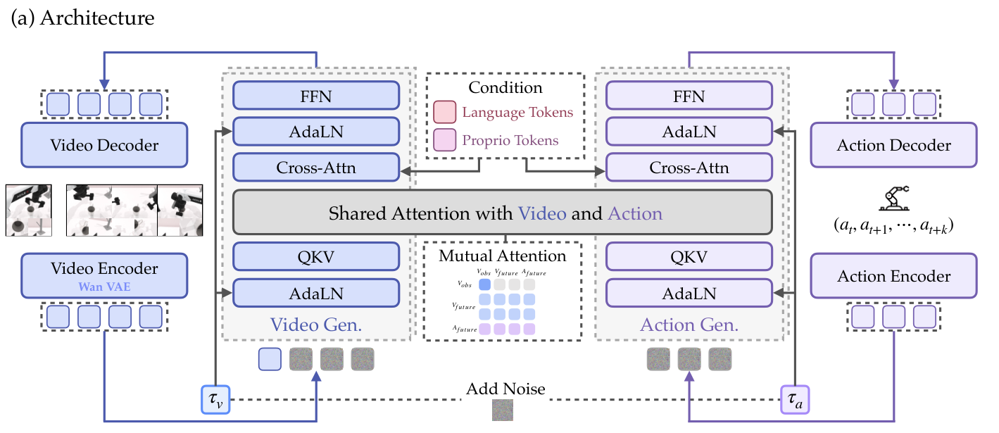
现在把各部件放回源码顺序。对模态 ，记进入第 层的残差特征为 ，时间调制的六项如上。为避免把时间调制与普通层权重混淆，下列 都是可训练的线性层参数， 是本次前向由噪声时间与该层调制表生成的向量。
第一步，两路各自归一化并调制：
第二步，各自投影 ，对完整投影宽度做 RMSNorm，再按头应用相应的 RoPE：
第三步，拼接两路的 ，按 mask 做一次多头联合 attention，再按视频 360 个、动作 32 个位置拆开，得到 。两路各自输出投影，做带 gate 的残差更新：
第四步，查询语言和当前状态上下文。两路有自己的 context embedding：原始 context 宽度为 4096，视频映射到 3072，动作映射到 1024；再用各自 cross-attention 模块更新：
第五步，归一化并使用 FFN 的时间 scale/shift，做非线性加工，再加回带 gate 的残差：
这就是一对层。重复 30 次，逐层得到更有用的联合表示。注意力、context cross-attention、FFN 是这个顺序；context cross-attention 没有单独的时间 gate。 它当然仍间接受时间影响，因为其查询来自已经经过时间调制的特征，但不能把这种间接依赖写成它也拥有那六项之外的额外 AdaLN gate。动作层实际后半段见 源码:855，视频对应实现见 源码:577。
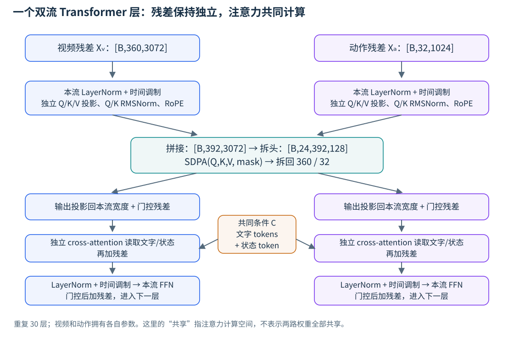
7.1 文字和当前机器人状态怎样进入两路
冻结的 umT5 将任务指令编码为 的文本 context。当前机器人状态 由可训练线性层投影为 ，拼在文本后面，构成 。这个状态 token 是当前已知条件，不属于正在生成的 32 个未来动作 token。状态 context 的创建:506。
视频和动作再各自用 Linear → GELU → Linear 投影这份原始 context，得到 与 。每一层 cross-attention 都可重新读取它们，只是该层的 Q/K/V 参数不同、当前查询表示不同，因此各层实际读取的内容与强度也会变化。文字编码器被冻结，不意味着文字条件只能影响第一层；它通过每层 cross-attention 持续影响整条去噪计算。
本体状态表达“机器人现在在哪里、姿态怎样”，文字表达“要完成什么”，当前图像提供“场景现在是什么样”。三者进入网络的通路不同：当前图像作为干净视频 latent token 参加联合 attention；文字和本体状态作为 context 被单独的 cross-attention 读取。未来动作与未来视觉则是本次去噪要逐步恢复的变量。
上下文 padding 位置和没有有效状态的样本可通过 mask 排除，防止它们作为真实条件被读取。需要特别区分这种 context mask、控制跨模态读取的 attention mask、计算动作损失的 80 维有效性 mask：它们分别作用于条件 token、信息连边和监督坐标，不是同一种掩码。
7.2 输出头预测的是去噪方向
30 层结束后，动作侧使用简单的 线性层，逐动作位置得到 的预测速度。这个动作 decoder 没有再套一层 AdaLN，也不是三层 MLP。动作输出:479。
视频侧的头稍有不同：先做无 affine LayerNorm，用时间向量和可学习的两项调制提供 shift/scale，再投影到 维；随后 unpatchify 恢复为 的视频 latent 速度。因此“两个线性头”是概括性描述，不能推断两路 head 完全相同。视频 head:297。
这些输出是一次去噪前向的方向场。scheduler 再用它们更新视频 latent 和动作变量，下一轮把更新后的变量重新送进这 30 层网络。由此要区分 30 层网络深度 与 10 次去噪迭代：常规 10 步推理会反复调用整套网络，不是总共只计算 10 层，也不是一个 Transformer 层对应一个动作时刻。使用速度复用等加速时，部分步的完整前向可能被近似复用，需按具体配置理解。
08 为什么两个损失能一起训练两条流
8.1 一次前向中同时计算，不代表互相等待对方最终结果
在同一层开始时，两路根据各自“上一层的表示”产生 Q/K/V；driver 拼接后一次性算出两路 attention 输出；两路再分别完成 context 与 FFN。这是一个有限、明确的前向计算图。它不需要先等待视频流预测完，再回头更新动作；也不需要在同一层内无限循环直到两者一致。
同理，32 个动作 token 在每次网络前向中并行处理，动作块通过多轮去噪共同变得清晰。虽然真实机器人最终按时间顺序执行这 32 步，网络生成这些动作时并没有强制采用“先生成第 1 步，再生成第 2 步”的自回归流程。
8.2 动作误差怎样回传到视频网络
以某个动作查询为例，若允许读取视频，动作侧的输出含有
假设最终动作损失发现“夹爪位置偏左”，梯度会先流到动作 decoder 和后续层，再流到这里的 。对 value 而言，局部梯度含有
这一查询贡献的项。即使 来自视频流，也能收到动作损失的梯度。另一路梯度通过 softmax 权重回传到匹配分数，再回到 和 。对一行 softmax，
因此学习会同时改变“视频提供什么内容”“动作怎样提问”“两者怎样匹配”。多层连接让这些梯度继续传到更早的视频/动作表示和参数。相反，mutual 下视频预测也能读取动作，所以视频损失同样可能训练动作侧参数。总损失的两项虽分别作用于两种输出，参数更新并不严格隔离在各自网络内部。
这里有一个经常被混淆的结论：某样本的动作监督被 mask 掉，只表示没有直接动作误差项；它不自动证明动作流所有参数对该样本的梯度都为零。 是否还有来自视频损失的间接梯度，取决于该次前向保留了哪些分支与可见性。分析人类视频混合训练时，应同时检查损失 mask 和计算图，不能仅凭“没有动作标签”作出“动作网络完全不参与”的结论。
禁止的 attention 连边在该次 attention 中权重为零，因此通过那条读取关系的直接梯度也为零。但完整模型仍可能通过其他允许路径、共享条件或别的层建立间接影响；判断严格独立性要看整个计算图。例如保护首帧需要它在所有层都不能读未来和动作，而不是只把第一层遮住。
8.3 冻结、反向传播和 checkpoint 各自意味着什么
论文 α 训练更新视频 DiT、ActionDiT 和状态投影；冻结文本编码器及 VAE。[论文 §5.1.2，p18] “冻结 VAE”表示训练不修改 VAE 的参数，视频 DiT 仍接收 VAE 提供的 latent 并学习如何在 latent 空间建模未来。冻结文本编码器同理，不影响其输出作为条件参与后续可训练计算。
训练时为了反向传播，通常要保存各层中间激活，这会占很多显存。gradient checkpointing 选择少存一些中间量，在反向传播时重新执行相应前向来恢复它们，以额外计算换显存。它不会新增网络层，也不是每几步才训练一次。OpenWAM 的 driver 可对 mixed attention 或整个 pre → mixed → post 层步骤做 checkpoint，并避免重复的嵌套重算。checkpoint 入口:177。
8.4 Attention 的计算成本来自哪里
普通稠密 attention 要让每个查询与每个键比较，因此核心点积与加权求和的计算量约为 ，其中 是头数、 是联合 token 数、 是每头维度。α 这个例子每头有 个匹配分数，24 头共约 369 万个。若显式保存一张 BF16 分数矩阵，仅这张矩阵、单样本、单层就约为 7.0 MiB；反向传播、Q/K/V、其他激活与参数还会增加成本。
这个数用于理解尺度，不是对实际显存占用的测量。代码调用 PyTorch 的 scaled_dot_product_attention；实际后端可能使用融合计算，在满足条件时避免把完整注意力矩阵全部存入显存。FlashAttention 类算法通过分块与在线 softmax 主要减少中间存储和访存，保持标准 attention 的数学目标；它并没有把每个 token 都需要比较的关系自动变成线性数量。具体启用哪种后端取决于硬件、精度、mask 和运行设置。联合 attention 调用:125。
因此，VAE 的空间/时间压缩与 patch 化直接影响 Transformer 的成本。如果图像高宽各翻倍而压缩设置不变，视频 token 大约变成四倍，视频主导的稠密 attention 配对数大约变成十六倍。增加视角若通过扩大画布实现，也会沿这一路增加成本。与此同时，α 的大矩阵投影和 FFN 也非常昂贵，不能仅凭 attention 的 公式断言总运行时间完全由 attention 决定。
8.5 动作宽度只有 1024，为什么 ActionDiT 仍约为 1B 参数
“隐藏宽度为 1024”容易给人一种动作分支很小的印象，但它在每层中两次进入宽度为 3072 的注意力空间：一次联合注意力，一次读取 context 的 cross-attention。忽略 bias、归一化和调制表等较小项，可以估算一层的参数数量。
联合 attention 的三个输入投影各为 ，输出投影为 ，合计 ，约 1258 万。context 先被独立映射到 1024 维，所以 cross-attention 的四个投影合计也是约 1258 万。FFN 的两个投影合计 ，约 839 万。因此每层三项相加约为 3355 万，30 层已约为 10.07 亿；再加上时间与 context 的输入网络、动作输入输出层等，整体约为 10.2 亿参数，与论文所称 1B ActionDiT 的量级一致。
这也解释了一个工程上的选择：保留动作残差流 1024 维，可以控制动作 FFN 和许多调制参数的成本，同时让它进入与视频匹配的注意力空间。只按 的比例去估计整个动作网络比视频网络小多少，会忽略这些共享宽度的注意力投影。
8.6 用源码验证自己的理解
可以沿下列最短路径把本章每一步与实现对上：先看动作的 prepare_state，确认动作输入线性层、时间调制和 context 投影；再看 pre_attn_at_layer_for_compile，确认 LayerNorm、AdaLN、Q/K/V、RMSNorm、RoPE 的顺序；接着看 driver 的 _step_impl 与 _mixed_attention，确认沿 token 轴拼接及布尔 mask；然后看动作/视频各自的 post_attn_at_layer_for_compile，确认输出投影、残差、cross-attention、FFN；最后看两路 prediction head。
这条路径对应的关键入口分别是 动作准备:713、动作前半层:781、联合 driver:191、动作后半层与输出:843、视频层与输出:523。注意仓库里同名 ActionDiT 还服务 joint_cross_attn 和 idm 等变体；本章描述的是 α 采用的 joint_self_attn 路径，阅读时应跟随这一分支。
可以用三个问题检验是否真正读懂了这些计算。把动作的第 1 步与第 32 步位置交换但不调整 RoPE，网络会把内容解释为新的时间位置，因为 RoPE 绑定的是 token 在动作块中的序号。把 mutual 改成 action_sees_video，世界流便不再读取动作，动作仍能使用整个世界流；由于读取范围变了，联合 softmax 的权重也随之改变。把某个机器人的 12 个未使用动作槽位在 loss 中 mask 掉，只是去掉这些坐标的直接监督，它不会把动作 token 的隐藏宽度从 1024 自动减为更小，也不会删除这些 token 参与注意力的机会。
09 把 α 放回 Infra：其他架构究竟改了什么
现在已经能理解 α 的一次前向，就可以比较仓库的其他架构。比较时有三个独立问题：视频和动作是否共享参数；它们在哪里交换信息；动作损失能否通过交换位置回传到视频网络。架构名称只概括设计方向，具体计算仍要读实现。
9.1 相同执行接口，让不同骨干可以组合
论文把架构写成 ： 是编码器， 是各条流的骨干， 是注意力可见性， 是执行组织方式。骨干共同暴露 prepare、逐层 step、finalize。prepare 将输入变成带有上下文、位置与时间信息的状态；step 推进一层；finalize 恢复对应输出形状。为了让双流在层内相遇，step 又可以分成 pre-attention 和 post-attention。前半部交出 Q/K/V，driver 计算混合注意力，后半部接回结果。
这种抽象的实质是明确哪些信息在模块边界交换。换视频骨干时，新骨干要适配这些接口、提供头数和每头宽度等几何信息；不能只因为两个网络都叫 Transformer 就直接把张量拼起来。注册表把配置中的 framework、variant 映射为具体类；训练器通过架构的 prepare_inputs/compute_loss，部署通过 generate 调用它。骨干协议:18；架构注册表:1。
9.2 单流 Vanilla：把两种 token 放进同一个主干
Single-System Vanilla 把视频、动作和状态 token 放进同一序列，由视频 DiT 的层处理。因此动作 token 要投影到视频主干的宽度，之后大量变换参数被两种模态共同使用。它的优点是组织直接，复用同一套层；代价是原来适合视频表示的变换还要同时满足精细动作回归。是否产生负面干扰要由实验判断。
该单流的状态 token 是序列末尾的只读条件：其他 token 可以读取它，它只读取自己。α 双流中状态则被加到文本 context 中。两者都提供当前机器人状态，但插入位置不同，不能把一个架构的状态 token 规则直接套给另一个。单流配置:21。
9.3 单流 MoE：为动作增加专门的 FFN 计算
论文将 MoE 归为按模态硬路由的专家设计。当前仓库的具体实现更值得看一眼：先调用视频骨干完整的 run_block，再在指定层切出动作 token，为动作加一个额外的、带时间调制的 FFN 残差修正，然后拼回序列。修正形式是
这里由 token 模态决定是否进专家，没有通用稀疏 MoE 常见的学习型 router、top-k 专家竞争和负载均衡损失。专家最后一个线性层零初始化，让初始修正为零，再逐渐学习新增能力。因而在说明当前源码时，应描述成“共享块之后的动作专用 FFN 残差修正”；只画成两条互斥 FFN 路径会遗漏共享块已经执行的计算。MoE 执行顺序:148；ExpertFFNBlock:86。
9.4 双流 Cross-Attention：先算世界特征，再让动作查询
Dual-System Joint Cross-Attention 先让视频 DiT 运行完，并在指定 bridge 层保存中间视频特征。然后 ActionDiT 运行，动作 token 的 query 读取这些视频特征的 key/value。视频在这次前向里没有反向读取动作。它与 α 每层把两边 Q/K/V 合在一起的过程不同：信息交换的位置、归一化所覆盖的 token 集合，以及计算执行顺序都有差别。
detach_bridge=false 时，动作损失能经 bridge 特征更新视频骨干。detach_bridge=true 使用同样的数值特征，但在该位置停止动作梯度：动作仍看得到世界，动作损失却不再沿这条 bridge 更新世界网络。视频自己的损失仍可训练视频网络，因此 detach bridge 不等于冻结整个视频骨干。特征收集与 detach:228。
这两个设置都属于 cross-attention 变体，所以论文写六种架构，表1却能出现七行：cross-attention 被拆成了允许和阻断动作梯度的两个实验设置。
9.5 IDM：未来视觉作为动作推断的条件
逆动力学模型（Inverse Dynamics Model）的基本想法是：给定当前与将来的状态或观测，推断什么动作能把两者连接起来。在 OpenWAM 的 IDM 变体中，训练同时准备加噪视频分支、加噪动作分支和 teacher-forcing 视频条件分支。动作读取条件视频分支，而不读取那个正在承担视频去噪目标的 noisy-video 分支；两种视频分支由掩码隔开。
为了减少动作只适应完美视频条件的风险，条件视频按配置概率再加噪，默认概率为 0.5。部署分两阶段：先生成视频，再让动作根据生成视频特征去噪。训练使用真值派生条件、推理使用模型生成条件，二者仍可能有分布差别；给条件加噪可以改善鲁棒性，但不会自动保证完全消除这种差别。teacher-forcing mask:59；条件视频加噪:845。
9.6 三流：增加当前观测的语义理解表示
Tri-System 增加冻结的 Qwen3-VL 骨干，提取当前观测与文字的理解特征，再经过可训练 projector 和 understanding expert。默认理解流隐藏宽度512、FFN宽度2048，在每层投影到与视频/动作匹配的注意力空间。它形成 [video, action, understanding] 三组序列。
理解流是只读尾部：视频与动作可读取它，它只在自身内部更新，不读取带噪的未来视频和动作。所谓“只读”是对其他流而言的信息方向，不意味着理解 expert 不训练。冻结的是上游 VLM，其后的 projector 与 expert 仍属于可训练能力。三流配置:17；UnderstandingExpert:43。
上述变体使 OpenWAM 成为研究工具：可以在相似的数据与训练接口下改变参数共享、融合位置、梯度路径和语义条件。不过“接口统一”并不等于每种组合具有相同参数量、训练成本或优化难度；解读消融时仍要保留这些差异。
10 从高斯噪声到可执行动作：Flow Matching、训练与部署
本章解释双流 Transformer 为什么能从一堆随机数生成未来视频和动作。前面的网络结构回答了“信息怎样交换”，这里回答“网络究竟学什么、为什么这样学有用、训练和推理分别执行什么计算”。主要依据论文 §3.2–3.3（第 7–9 页）、§5.1.2–5.1.3（第 18–19 页）、附录 B（第 33–35 页），以及当前工作区对应实现。以下所有低维数值例子都是教学示例，不是论文测量结果。
10.1 为什么需要生成一个分布，而不只回归一个动作
设当前画面中杯子位于机器人面前，指令是“拿起杯子”。同一个画面和状态，可能允许先向左微调再抓，也可能允许先抬高再向前抓。机器人演示给出的是其中一条轨迹。模型需要学的是条件分布
其中 是未来视觉 latent， 是动作块， 是当前观测， 是语言指令， 是机器人当前状态。这个式子表达“在这些条件下，哪些未来画面与动作组合比较可能”，并不意味着模型显式保存了一张概率表。
为什么不让一个网络直接输出最小均方误差意义上的动作？如果某个障碍物可以从左侧和右侧绕过，两类演示可能各占一半。直接对这两个动作做平均，可能指向障碍物中间。这个例子只说明单点回归容易丢失多种解之间的结构；是否真的出现这种失败，要看具体数据和动作表示。
生成模型提供另一种表达方式：先从一个容易采样的分布抽取随机变量，再用网络把它逐步变成合理样本。不同初始噪声可以走向不同结果。OpenWAM 使用高斯噪声作为起点，用 Flow Matching 学会这个变换；视频和动作各有一份噪声，又在每一步通过注意力相互影响。推理服务器默认固定种子时，同一组输入与设置可以生成可复现结果；“模型表达分布”不等于部署时每次都必须随机换一条轨迹。
这里还有一条容易误解的边界：OpenWAM-α 没有在该生成循环中枚举数百条动作、用一个显式奖励函数打分、再选择最高分动作。它把演示数据中“什么动作与什么视觉未来相匹配”的规律学进联合向量场，推理时沿这个场生成一组视频 latent 与动作。
10.2 先理解一条直线，再理解 Flow Matching
暂时把视频和动作统一写成一个向量 。它可以是一个标量，也可以是包含几千个坐标的动作块或视频 latent。拿到一个干净训练样本 后，另外采样一份同形状的独立高斯噪声
论文采用“ 是噪声、 是干净数据”的方向，定义两点之间的线性插值：
当 ，右侧只剩噪声；当 ，右侧只剩数据；中间时刻是二者的加权和。对时间求导得到
这个导数是“如果沿这条线走，当前位置每前进一点时间应该怎样变化”，所以称为速度。它不是机器人在真实世界中的关节速度。这里的时间是生成过程的噪声时间，不是数据帧的时间，也不是控制器的物理秒数。例如，一个动作块有 32 个物理时间步，同时整个动作块还要经历 10 个去噪步骤；两条时间轴承担不同作用。
训练时，我们知道干净样本和自己采样的噪声，因而知道正确速度 。网络收到的是中间状态 、时间 和条件 ，输出速度预测 。最简单的训练损失是
“Matching”就是让预测速度匹配已知目标速度。实际训练不需要先模拟一整条去噪轨迹：随机选一个训练样本，随机选一个噪声时间，直接构造这个中间点，训练网络在这一点给出正确方向。重复足够多次，网络就见过各个噪声水平的大量例子。
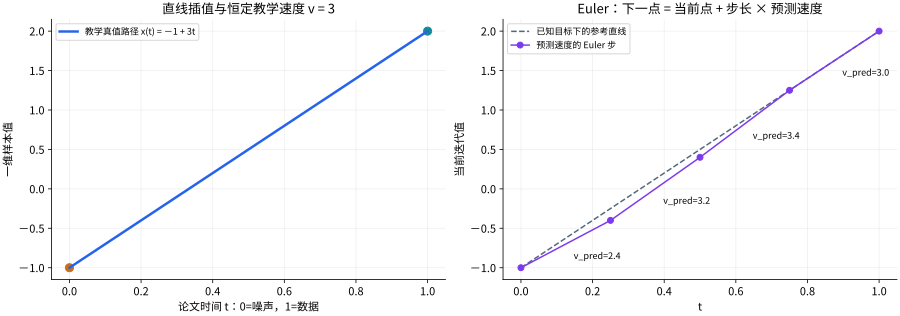
图左把一个教学配对的插值写成了直线；图右故意使用几次不同的预测速度，展示 Euler 怎样逐段推进。图中的干净终点只为教学对照而展示。真正推理时并不知道终点，只有当前候选状态、条件和网络给出的局部速度。
10.3 每个训练样本的直线，为什么能组成复杂的生成过程
上面的式子似乎太简单了：既然每条训练路径都是直线，网络为什么不一次走完？关键在于，推理时模型不知道配对的干净终点 ，只知道当前噪声状态和条件。
训练数据中的不同 配对可能经过相同或相近的 ，但目标速度并不相同。对同一位置、时间和条件，平方误差最优的预测是条件平均：
网络因此学会的是一个随位置、时间和条件改变的向量场。可以把它理解为：在任何一个当前候选未来附近，都能询问“下一小步往哪里改，比较可能得到真实数据中的合理未来”。网络不会在推理过程中先辨认一条已知直线再照着走。
这里的条件平均和前面直接对最终动作做平均并不冲突。直接回归把所有多种可能压成一个终点；Flow Matching 在噪声空间的不同位置给出不同局部方向，再将不同初始噪声输送到不同结果。随着噪声下降，当前位置已经携带了自己正在形成的那一种未来，后续方向也随之改变。
从概率角度看，令 表示中间随机变量 的分布。理想向量场使概率质量满足连续性方程
这条方程可以用水流理解：某个小区域中的概率质量会因为流入而增加、因为流出而减少。正确的速度场把起点的高斯分布逐步搬运为数据分布。它是理解方法的数学依据；实现中不直接求解这个偏微分方程，而是训练速度网络并对样本做常微分方程积分。
真实网络只有有限容量、数据也有限，推理通常只走 10 步，因此得到的是近似。训练直线、学到的条件平均向量场和实际生成轨迹是三个相关但不同的对象。把它们都称为“从噪声画一条直线到答案”，会遗漏最核心的一层。
10.4 论文的 与代码的 ：符号翻转要一起看
当前代码使用相反方向的时间变量：
因此 是纯噪声， 是干净数据。相同的插值写成
变量换了，导数的符号也要跟着换。可以把两套记法放在一起：
| 含义 | 论文记法 | 当前代码记法 |
|---|---|---|
| 纯噪声端点 | ||
| 干净端点 | ||
| 中间状态 | ||
| 监督速度 | ||
| 推理方向 | 时间递增 | sigma 递减 |
| Euler 时间差 |
代码中的 timesteps 又通常存成 ，这是输入时间嵌入的数值尺度。不要因为它叫 timestep，就把它当成论文里由 0 走向 1 的 。部署循环显式执行 sigma_v = t_v / num_train_ts_v，因此这里的 t_v 变量名实际承载的是代码时间刻度。动作调度器:61、生成循环的换算:1510。
再看一个命名细节：video_noise_pred、action_noise_pred、noise_pred 看上去像“预测高斯噪声”，但本路径训练目标是 noise - original_samples。这些变量在数学上承载速度预测。对应实现直接写在视频加噪和监督目标:1094与动作监督目标:111。
普通噪声预测、干净样本预测和速度预测可以在特定插值下相互换算，但不能在阅读代码时忽略系数。若 ，则
这个关系说明速度同时包含了恢复干净样本与恢复噪声所需的信息。OpenWAM 选择它，是因为推理直接需要局部导数来做积分。输出速度并不是没有预测目标，而是采用了与 ODE 更新相适配的目标参数化。
10.5 一个可以手算的 Euler 去噪例子
设干净标量 ，这一训练配对的噪声为 。代码方向的真实速度为
从 开始，初始状态 。为便于手算，先使用等间隔的 4 步教学调度；它不是 α 的 shift=5 调度。Euler 更新是
如果网络每一步都准确输出 ，就得到：
| 步骤 | 当前值 | 时间差乘速度 | 下一值 | |
|---|---|---|---|---|
| 1 | ||||
| 2 | ||||
| 3 | ||||
| 4 |
速度为负，样本值却在增加，因为噪声时间也在减少。两个负号相乘，这是检查符号最直接的办法。若把论文的 不加转换地放进代码的递减 sigma 更新，样本会沿错误方向移动。
这个例子速度恒定，因此一步也能精确到达终点。一般情况下，学到的是上节讨论的条件平均向量场，速度随当前样本而变；每一步必须用更新后的候选未来重新计算。Euler 用一个短直线段近似这一小段曲线，通常步长越小近似越细，但模型调用也越多。α 选择 10 步是质量与推理成本的工程取舍，不能从上述恒定速度例子推导出“10 步必然精确”。
还可以用一个稍深的解析例子检验“向量场会变”的说法。假设一维干净数据 ，噪声 且相互独立。则
平方误差最优速度为
其中第一项整体移动均值，第二项根据位置收缩或扩展分布。这说明即使数据分布很简单，正确的局部速度也不是固定的“朝某个样本走三格”。这只是教学解析模型，OpenWAM 实际学习的是高维、带语言与观测条件、视频动作耦合的场。
11 联合训练：二维噪声平面、监督与梯度
11.1 为什么视频和动作要各自抽一个噪声时间
OpenWAM 对视频 latent 和动作块 分别采样噪声以及时间：
一次联合前向同时输出
视频的噪声时间主要描述“未来画面有多模糊、离生成完成有多远”；动作的噪声时间描述“动作候选还有多随机”。两者在训练时独立采样，所以模型既会见到两个流都很乱，也会见到视频较清楚而动作还乱，或者动作较清楚而视频还乱。
把横轴设为论文的 ，纵轴设为 ，训练样本覆盖一个二维方形。四个角分别表示两流都噪声、只有视频接近干净、只有动作接近干净、两流都干净。独立采样是概率意义上的独立：；经过 shift 后，覆盖不等于均匀密度。
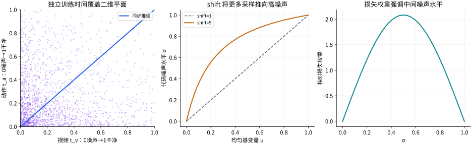
读原论文图 12(c) 时还要留意符号：该面板的轴写作 ，点云集中在右上角；正文 §3.2 则明确规定 是噪声、 是干净，§5.1.2 的 将高噪声样本放在较小的 附近。右上密集的画法更接近本章的 sigma／噪声程度坐标，不能未经转换就把图中的 等同正文的 。本报告自绘图明确采用正文 约定，因而高噪声训练点更多位于左下；原图用来读取“二维时间组合＋同步对角线”的结构，具体端点与积分方向以公式和代码为准。
如果训练总是强制 ，模型只会在对角线上获得直接监督。部署时让动作先去噪或让视频先去噪，就会遇到未直接训练过的时间组合。独立采样为不同调度提供了共同的训练基础。实现可以直接对照两个独立的 torch.randint:1088。它们不是同一个采样结果复制两次。
论文说不同调度路径留在训练分布内，严格理解应当是：噪声时间组合位于训练所覆盖的区域。这不保证学习误差、有限步积分误差或闭环控制分布偏移消失。生成样本一旦偏离理想中间分布，模型仍可能遇到训练不足的具体状态。因此“独立采样允许比较异步路径”与“任意路径效果都一样好”是两件事。论文 §4.2.3 的实验恰好发现同步去噪最好。
若把双流状态合写成 ，选定一条推理路径 ，路径上的变化率可写成
这个式子揭示了耦合的方式：两路有各自的更新步长，但两个速度都依赖当前两路输入。视频本步不更新，也不意味着它可以从前向中删除；动作可能仍要读取它。当前实现对 sigma 平台期只停止相应更新，仍把该流作为条件送进前向，见生成循环的 plateau 处理:1525。
11.2 shift=5 在做什么：采样分布与损失权重要分别理解
先从均匀变量 出发，定义时间变换
α 使用 。当 时，，因此变换后 sigma 更大，即更偏向高噪声。手算几个值就能看清：
| 原始 | shift=1 的 | shift=5 的 | shift=5 的论文时间 |
|---|---|---|---|
因为原始 有一半大于 ，变换后也有一半样本位于 的高噪声区域。若继续推导密度，有
当 时，该密度在 附近为 ，在 附近为 。这解释了“偏高噪声”的精确含义。当前代码使用 1000 个离散训练网格点，均匀抽网格索引；经过变换后的 sigma 本身不均匀。调度器网格构造:43。
损失权重则解决另一个问题：“这个已经抽到的时间点，其预测误差应当乘几倍？”代码先对时间刻度 计算
再减去网格上最小值，最后归一化；在默认 1000 点训练网格上可以写成
因此 在中等噪声附近较大，在端点附近较小。代码所谓 bell-shaped weight 是这条“指数曲线减去最小值再归一化”的离散权重，并非直接采样一个高斯时间分布。见权重计算:72。
二者不矛盾：shift 决定“抽到哪里的次数更多”， 决定“抽到以后误差有多重要”。如果用连续近似观察总体监督，某个 sigma 区间的影响同时受到 和 调节，还受到网络在该区间的实际误差及梯度大小影响。只画权重曲线就声称训练集中在中间噪声，或者只看采样密度就声称高噪声必然贡献最多梯度，都不严谨。
11.3 真正的联合损失怎样平均，mask 在哪一步生效
论文公式省略了张量归约的工程细节。当前实现先对每个样本的有效元素取平均，再乘该样本的时间权重，最后对 batch 取平均。令 是 batch 大小， 表示第 个样本、第 个动作、第 个坐标有效。动作损失为
例如，两个样本都占据统一的 张量，一个机器人只有 10 个有效动作维度，另一个有 40 个。若所有有效坐标的误差平方都为 1，则两个样本各自归约后都是 1。没有把前者的 70 个无效维度当作大量“预测对了的零”，也没有因为后者有效坐标更多就自动让其样本权重变成 4 倍。
当一个样本所有动作坐标都无效时，分子为 0、分母被夹到 1，得到该样本的动作损失 0。最终仍除以整个 batch 的大小 ；代码没有在 batch 级重新除以“有动作标签的样本数”。因此固定 时，batch 中纯视频样本比例会影响这一 batch 动作监督的总强度。实际配方通过混合比例、采样和损失权重共同决定两种监督的平衡。
视频损失先对每帧 latent 的通道和空间维度求平均，再对该样本有效未来 latent 帧求平均，最后乘视频时间权重；干净条件帧被剔除。视频和动作误差都会先转为 float32 计算 MSE，有助于在主模型使用 BF16 时提高损失归约精度。两个实现入口分别是视频损失:1198和动作损失:1254。
总损失为
两个系数都为 1 不意味着两支网络收到相同大小的梯度。误差分布、张量归约、跨流依赖和参数尺度都不同。它表示这两项经过各自规定的平均后，以相同显式系数相加。
还要区分三种 mask：跨流可见性 mask 决定注意力读谁；动作/视频有效性 mask 决定哪些元素计入损失；上下文 mask 决定文本 padding 和缺失状态 token 能否被读取。当前 compute_loss 会从前向参数中移走 action_is_pad 与 video_is_pad，保留它们用于 loss。因此不能把“无效动作槽位不计 loss”理解成“这些槽位所在 action token 从 attention 中消失”。该处理的源码注释和实现:1130。
11.4 无动作人类视频怎样贡献学习：监督项与梯度路径
人类第一视角视频可以告诉模型物体外观、遮挡、接触之后的视觉变化、场景中常见的动态过程，但通常没有与目标机器人接口一致的动作标签。因此论文的混合训练对这类样本关闭动作监督，并屏蔽缺失的机器人状态条件。准确说法是：这类样本没有“正确机器人动作”的直接监督，主要提供视频训练信号。
需要避免把它简化为“ActionDiT 对人类视频完全不参与计算，所有参数都没有梯度”。当前通用路径中，如果样本以零填充动作与全无效 action mask 的形式进入 batch，模型仍可得到加噪后的 action token，action mask 只让 为 0。在 mutual 可见性下，视频输出能够通过注意力读取动作分支产生的 K/V 和隐状态。因此视频损失可能经过如下路径反传：
用链式法则写，就是某些动作参数 可能满足
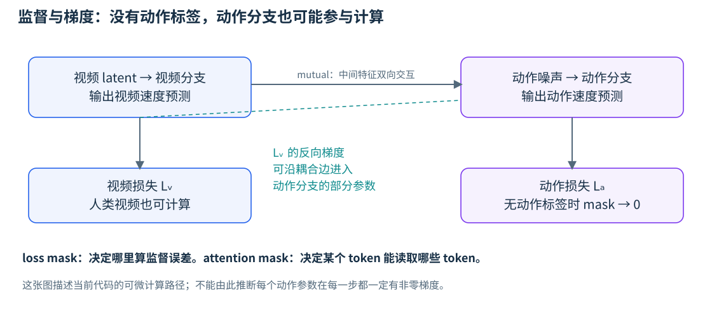
“可能”是必要限定：是否存在具体梯度取决于参数所在位置、可见性掩码、输入是否真的包含动作流，以及网络当前状态。只参与最终动作输出头且没有影响视频分支的参数，并不会仅因为上述视频损失就得到同样的梯度。若动作流被整体省略，或视频无法读取动作，依赖关系也随之改变。
状态 token 的缺失处理更直接：代码把整个缺失样本的状态 token 乘零，并把对应 context mask 设为不可见，切断该样本通过此 token 进入网络的路径。状态 token 屏蔽:521。这与动作 loss mask 的作用位置不同。
这段分析来自当前公开基类与双流实现的计算图，不能据此补造一个尚未核对的人类数据读取器。论文给出的“人类视频仅计算视频损失”与“部分动作分支参数可能间接受到该损失影响”在数学上可以同时成立。
11.5 为什么首帧要做四件看起来重复的事
OpenWAM-α 的第一 latent 帧承载当前真实观测。它应当成为生成未来的条件。为保证这一角色，系统在不同层面做了四件事：
- 输入保持干净。 训练时先给整段 latent 加噪，再用真实首帧 latent 覆盖开头；推理开始时也把相应区域替换为真实观测编码。
- 时间嵌入标明干净。 首帧 token 使用代码时间 0，即论文时间 1；未来帧 token 使用本次采样或当前积分步的视频噪声时间。
- 注意力限制信息回流。 首帧行不能读取有噪的未来帧和动作，避免首帧隐表示被正在猜测的未来污染；未来帧与动作仍能根据配置读取首帧信息。
- 不计预测损失，并在推理中反复固定。 干净首帧不是待生成目标，所以排除相应视频 loss；每个 Euler 更新后再把它覆盖回观测 latent，防止生成更新改写条件。
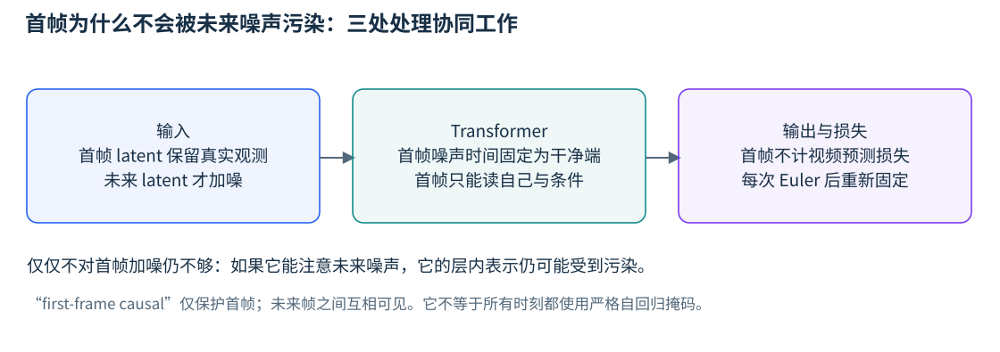
这些措施各管一个位置。只把原始首帧 latent 设为干净，仍不能阻止 attention 将未来噪声混入其隐藏状态；只设置 attention mask，仍不能阻止外层 Euler 更新改写首帧 latent；只不计 loss，也不会自动让网络把该区域保持不动。把这四件事连接起来，才能理解“干净锚点”在代码中意味着什么。
时间嵌入的代码入口是Wan build_time_modulation:35，训练覆盖在加噪后首帧替换:1100，loss 剔除在视频损失首帧处理:1202，推理重复固定在Euler 更新之后:1565。这四项描述针对 α 的 Wan TI2V 路径；Infra 的 I2V、VACE 等骨干可能通过其他条件通道输入首帧，不能一律把 latent[0] 从它们的损失中删掉。
11.6 无监督动作槽位为什么不能任由网络去噪
80 维统一动作空间中，一个机器人只占用部分槽位。未占用槽位的干净填充值为 0，训练又不对它们计算动作损失。因此其动作输出速度没有这项直接约束。若部署时仍自由使用这些坐标上的预测速度更新，数值可能漂移；漂移后的 80 维向量又会在下一步被投影为 action token，进而影响有效动作与视频。
当前实现利用一个无需学习的事实：如果某坐标干净值固定为 0，它的训练插值必然是
于是部署时把无效维度固定在这条解析噪声路径上：每一步由当前 sigma 和初始化噪声直接计算该值，最后 时回到 0。这里不能简单在整个去噪过程中都填零，因为训练时高噪声端的这些坐标本来就是带噪的；保持解析路径更符合训练输入的构造。
代码优先使用显式 active_action_mask，否则从统一 normalizer 的 scatter 映射推断有效维度。若没有可用映射，则不会凭空猜测 mask。无效维度判定:1317、更新后覆盖解析路径:1573。注意这是动作坐标级别的处理；ActionDiT 每个 token 代表一个完整动作时刻，不是 80 个坐标分别对应 80 个 token。
11.7 一个训练步骤到底执行几次模型
把一个普通训练步骤展开，可以写成下面的教学伪代码。它对应真实逻辑，但省略分布式封装、类型转换和多个骨干的兼容分支：
# 一个 batch；每个样本有视频、语言、动作、当前状态及有效性 mask
inputs = architecture.prepare_inputs(batch)
sigma_v = independently_sample_video_sigma(B)
sigma_a = independently_sample_action_sigma(B)
eps_v = gaussian_like(inputs.video_latents)
eps_a = gaussian_like(inputs.actions)
z_noisy = (1 - sigma_v) * inputs.video_latents + sigma_v * eps_v
a_noisy = (1 - sigma_a) * inputs.actions + sigma_a * eps_a
z_noisy.first_frame = inputs.clean_first_frame
v_video, v_action = model(z_noisy, a_noisy, sigma_v, sigma_a, context)
loss_v = weighted_valid_video_mse(v_video, eps_v - inputs.video_latents)
loss_a = weighted_valid_action_mse(v_action, eps_a - inputs.actions)
loss = loss_v + loss_a
loss.backward()
optimizer.step()
核心是一次随机噪声状态上的联合前向，不是先完整生成一遍 10 步未来，再对最终动作算 loss。反向传播将两项损失的梯度按计算图传回视频 DiT、ActionDiT 与状态投影。VAE 和 umT5 文本编码器在 α 配方中冻结，提供编码结果。
如果启用 gradient checkpointing，反向时会重算某些中间前向，以显存换计算；这不改变“每个训练样本只监督一个随机噪声状态”的算法。开启 gradient accumulation 后，多个 micro-batch 的梯度累积起来，才进行一次 optimizer update；也不能把“微批处理步”“优化器更新步”和“去噪步”混为一谈。
实际调用链是 OpenWAMTrainer.compute_loss → architecture.prepare_inputs → architecture.compute_loss → 双流 forward → 两项损失 → accelerator.backward → optimizer.step。代码可从trainer 的损失入口:569与训练循环:329进入。优化器学习率调度器的 scheduler.step() 调整学习率；视频/动作的 flow scheduler 则负责噪声时间与 Euler 步长，虽然英文都叫 scheduler，职责完全不同。
论文表 9 的预训练配置是 128 张 H200，每卡 24 个 clip、无梯度累积，因此全局 batch 为 。学习率为 ，AdamW 的 ，权重衰减 0.01，梯度范数裁剪 1.0；学习率先用 5% 训练进度 warmup，再余弦下降到初值的 1%；采用 BF16 与 ZeRO Stage 2，155,862 次训练迭代，约 7 天。当前默认 train.yaml:10每卡 batch 是 16，因此不能把“直接运行默认 YAML”当作已经复现论文硬件和全局 batch。
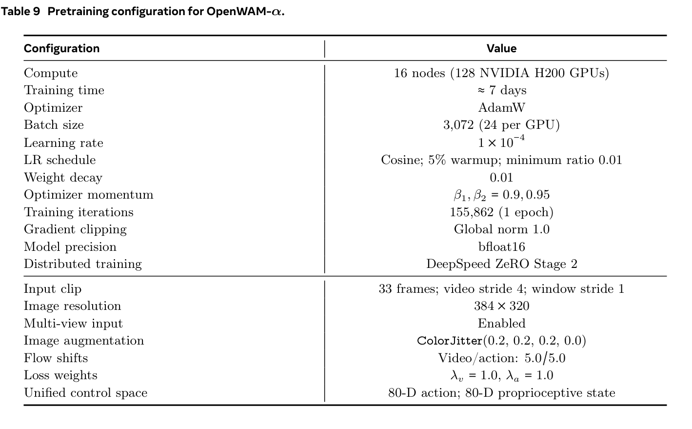
理解这些工程项只需抓住各自作用：BF16 降低主要张量存储和计算成本；梯度累积让较小微批等效组成更大全局 batch；梯度裁剪限制异常大的更新；ZeRO Stage 2 分摊优化器状态和梯度的存储；gradient checkpointing 少保存激活、反向时重新计算。它们不把 Flow Matching 改成另一种训练目标，却决定这么大的双流网络能否在给定硬件上训练。
12 推理与部署：从十步去噪到闭环执行
12.1 α 的十步生成怎样运行
部署开始时没有未来视频和真实动作可供编码。系统先编码当前观测与语言，归一化状态，再为待生成未来 latent 和动作块初始化高斯噪声。首帧 latent 被固定为当前图像编码，未来部分保留噪声。
α 采用同步调度，两流都使用相同的 shift=5。若 ，代码 sigma 序列为
论文记法则是 。完整数值如下，最后的 0 是终点，不再执行一次额外前向：
| 论文时间 | ||
|---|---|---|
| 0 | 1.000000 | 0.000000 |
| 1 | 0.978261 | 0.021739 |
| 2 | 0.952381 | 0.047619 |
| 3 | 0.921053 | 0.078947 |
| 4 | 0.882353 | 0.117647 |
| 5 | 0.833333 | 0.166667 |
| 6 | 0.769231 | 0.230769 |
| 7 | 0.681818 | 0.318182 |
| 8 | 0.555556 | 0.444444 |
| 9 | 0.357143 | 0.642857 |
| 10 | 0.000000 | 1.000000 |
可见同步不等于线性等间隔；两路彼此同步，但噪声时间差是不均匀的。较高噪声处步子更密，最后一步跨度较大。这是具体配方，不应自动替换成均匀 sigma 序列。
在无 CFG、无速度缓存跳步的标准 α 路径中，每个区间执行一次联合前向，因此 10 个区间对应 10 次完整双流网络调用。每次调用内部又经过 30 个配对 Transformer 层：先让当前视频候选和动作候选在深层交换信息，再输出两路速度，随后外层 Euler 更新同时修改整个未来视频和全部 32 个动作。10 个去噪步骤并不是把 32 个动作按时间一个个生成。
两流更新写成
每一步之后再次固定首帧与无效动作槽位。结束后，动作从统一归一化空间 gather 回机器人原生维度，并反归一化成实际物理量。是否 VAE 解码未来视频由 decode_video 控制；只执行机器人控制时可以跳过 RGB 视频解码，但视频 DiT 的联合去噪计算仍是策略的一部分。推理入口与后处理:1361。
一个完整请求的调用链是 PolicyServer.predict → ObsPreprocessor → WAMPolicy.predict_action → Executor → InferenceEngine.generate → make_schedule → architecture.generate → 双流 forward/Euler → normalizer.unnormalize → 返回一个原生动作。入口见server:180、policy:53、engine:247。缓冲区仍有动作时，Executor 不会因每个请求都附带新观测就自动重跑模型。
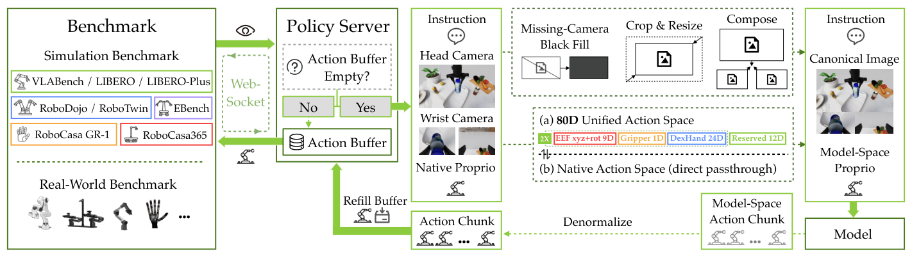
12.2 两种“同步/异步”分别控制什么
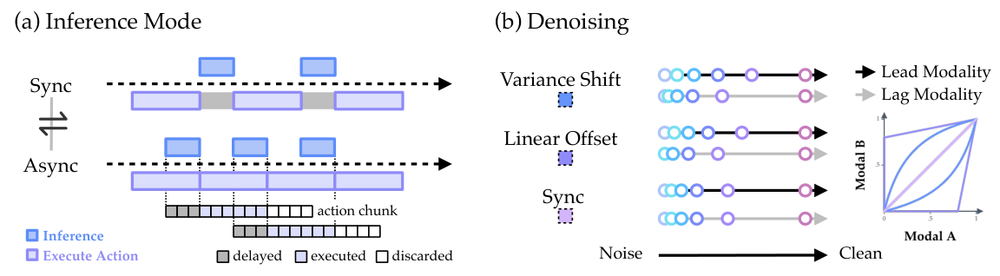
论文图 3 的左右两部分对应两个独立问题。
| 设置 | 管什么 | 同步含义 | 异步含义 |
|---|---|---|---|
denoise_mode |
一次生成内部两流的噪声时间 | 视频与动作沿相同进度去噪；α 的相同 shift 对应对角线 | 一个流更早变干净，另一个流稍后跟上 |
inference_mode |
多个动作块之间，生成与真实执行的安排 | 动作缓冲耗尽后等待生成 | 执行旧缓冲的同时，后台预取下一块 |
例如，“异步执行 + 同步去噪”完全合理：机器人一边执行上一块，后台模型内部的视频和动作仍并排走同一条 10 步时间表。反过来，“同步执行 + 视频先行去噪”也可以运行。不要把论文关于 denoise schedule 的消融结果解释成后台执行器的评测结果。
去噪异步调度使用两个可组合函数。设 是总进度，先行流使用
滞后流可使用线性延迟
再通过各自训练所用的噪声时间 warp 映射到实际 sigma。这里的 决定两流谁先行、领先多少， 决定噪声网格形状，两个参数不能混淆。 会退化为同步路径，代码还专门处理了该情况下的数值一致性。异步调度实现:171。
执行层的同步模式则简单得多：生成 个动作，将前 个放进缓冲，每次请求弹出一个；用完后读取当前观测再生成新块。 是 inference_horizon，省略时消费整块；若 ，未使用尾部被丢弃。它实现一种按块重规划：每块开始重新观察，块内按预测序列执行。同步执行器:43。
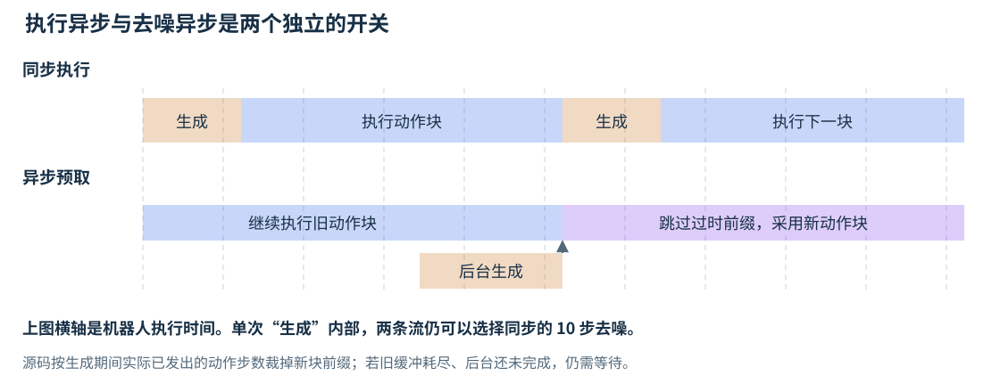
后台异步模式在缓冲只剩 个动作时启动下一次推理。生成期间旧动作继续执行，等旧缓冲耗尽时再采用新结果。新块是根据较早观测生成的，所以其开头一段已经对应过去的控制时刻，需要跳过。
用一组教学数值说明：生成长度 ，每次执行窗口 ，提前阈值 。旧缓冲剩 8 个动作时，后台开始根据此刻观测生成新块。旧块的这 8 个动作执行完后，新块若已就绪，则丢弃其前 8 个位置，把接下来的 16 个位置放进缓冲，剩下 8 个丢弃。若后台仍未完成，代码会等待结果；异步模式可以隐藏部分延迟，但不会让推理耗时凭空消失。
论文图中的 delayed prefix 用 说明固定延迟情形；当前代码实际用 current_step - pending_start_step 统计已经发出的动作数，再据此跳过前缀，因此实现表达的是经过的控制步数。后台只设一个 worker，不会无限排队提交多个相互过时的规划。异步采用结果与前缀跳过:247。此外，这种跳过规则假定生成块与旧动作的时间推进可以对应；它并没有保证旧动作执行后真实状态恰好等于新块假想的前缀状态，这是异步控制需要实测的误差来源。
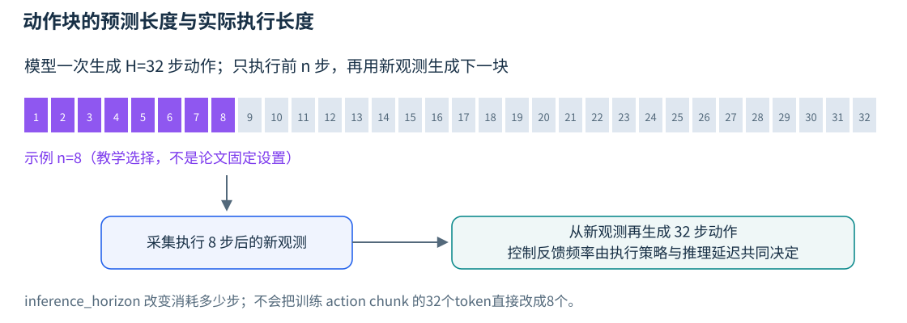
论文 §5.1.3 声明正式仿真与实机评测使用同步执行。报告中的 α 成绩因此不能直接当作任意异步前取设置下的成绩。
12.3 推理加速做了什么，哪些地方仍然计算
第一项是提示词 embedding 缓存。同一条任务指令的 umT5 编码通常不随每次相机画面变化，所以在服务生命周期内复用编码结果。它省去重复文本编码，不会省去每层根据当前 token 查询文本的 cross-attention。
第二项是跳过未来视频解码。ActionDiT 可以直接利用视频 latent 特征完成动作生成，控制端通常不需要观看生成视频，因此省去 VAE 把未来 latent 变成 RGB 的计算。当前观测仍要被编码，世界流仍要参与联合去噪；把这一优化称为“关掉世界模型”会误解它的作用。
第三项是编译与 CUDA graph 路径。论文概括为联合去噪计算的编译加速。当前 α 对应的 joint_self_attn.py 更具体：它用 torch.compile 包装 driver.run_joint_loop，即一次前向内部的 30 层 MoT 循环；外部 generate 仍用 Python 循环安排 10 个时间区间、缓存决策和 Euler 更新。固定形状和图重放减少 Python/算子启动开销，首次请求需要编译预热。不能据此声称网络请求、图像预处理与全部 10 步都被包进了一个不可分割的图。实际编译边界:134。
第四项是跨步骤速度缓存。如果最近两次真实计算出来的视频速度足够相似，同时动作速度也足够相似，下一次可能复用旧速度，直接做 Euler 更新，从而跳过昂贵的联合网络前向。相似性使用余弦值
张量被展平后比较；同步联合去噪必须确保两路都有可复用预测。连续跳步数有上限，用于周期性强制重算。该缓存每次生成新动作块时 reset，跨相邻去噪步骤复用，不把上一场景的速度无条件搬到下一场景。缓存判断:63、每块重置:315。
缓存是近似加速。高余弦相似度说明方向接近，并不保证模长相同；而且“最近两次变化小”只是对下一次变化的预测，不是数学保证。代码不会为了决定是否缓存而先算出完整的新速度，否则也就省不了这次前向。启用后 10 个 Euler 区间仍然存在，但真实网络调用可以少于 10 次。
当前类还保留 interpolation_weight 参数和相关描述，但实际 get_cached() 直接返回缓存速度，不能从参数名推断它已经执行线性混合。通用生成器在开启 CFG 时会禁用该速度缓存，因为条件与无条件预测需要独立缓存语义；α 默认单条件路径无需把 CFG 额外调用计入标准十步解释。缓存返回值:104、CFG 与缓存处理:1428。
论文报告 α 在 RTX 5090 上约 170 ms/块，是特定分辨率、步数和加速组合下的测量，不是每个动作都单独调用模型的耗时。缓冲中的多数动作可以很快弹出，但同步模式每次块边界仍要等待一次生成。部署实时性需要一起看模型延迟、每块执行多少步和机器人的控制频率。
12.4 为什么一个可部署 checkpoint 必须包含动作统计量
假设某动作坐标在训练时被归一化为 。网络输出 0.5，只能说明它在该归一化坐标的位置；必须知道原始上下界、分位数或均值方差，才能将其还原成米、弧度或夹爪命令。仅保存神经网络权重，无法完整恢复控制含义。
论文 §3.2 因而把 checkpoint 定义为三部分：模型参数、解析后的重建配置及所需 artifacts、动作归一化统计。重建配置还记录骨干类型、动作宽度、视觉编码方式和噪声 shift 等。部署从同一记录重建网络并恢复 normalizer，避免模型预测与控制端解释之间发生静默错位。
微调和断点续训也有不同语义。微调从已有权重开始一个新训练运行，新建优化器进度并使用新任务数据；resume继续原来的运行，还需要恢复优化器动量、学习率调度、随机状态与已消费数据位置。把训练了很久的 AdamW 权重加载进一个全新优化器，并不等于继续原来的优化轨迹。
当前配置将 finetune_ckpt_path 与 resume_ckpt_path 设为互斥；完整 resume 依赖先前开启 save_full_states_for_resume 保存的状态。如果目录只有 .safetensors 权重，应该做权重 warm-start，不能假称精确 resume。resume 还核对数据归一化统计，以免同一参数突然被要求解释另一套坐标尺度。入口检查:94、完整状态存在性与归一化检查:452。
当前训练器在正常完成后还会调用 finalize_keep_weights_only 删除 accel_state_step_*，只保留最近权重。因此曾经开启完整状态保存，并不保证已正常结束的目录仍有可用resume状态；恢复前应检查完整状态目录及完成标记。该行为见训练结束清理:692。
12.5 本章计算关系复习
以下问题可以检验是否真正把网络、生成过程与控制链路连了起来。先自己回答，再看括号中的要点。
- 为什么代码目标写
noise - data，推理却能从噪声走向数据？（代码使用递减 sigma，目标与时间差同时反号。） - 32 个动作时间步、30 层 Transformer、10 个去噪步骤分别是哪条轴？（物理动作序列、网络深度、生成积分时间。）
- 训练是否需要先完成十步生成再反向传播？（普通 flow 训练在一个随机噪声状态做联合前向；checkpoint 重算不改变该目标。）
- 时间独立采样是否意味着推理必须异步？（没有该要求；它覆盖二维时间组合，α 实验选择同步路径。）
- shift=5 和钟形 loss weight 是否做同一件事？（前者改采样时间分布和推理网格，后者改已抽到样本的误差权重。）
- 某机器人未使用的动作槽位为什么不在所有推理步骤都直接设零？（训练输入在这些槽位是 ；解析路径保留此噪声结构并在终点归零。）
- 人类视频的 action loss 为零，为什么某些 ActionDiT 参数仍可能有梯度？（mutual 下视频输出可依赖动作隐状态，视频 loss 可以沿该依赖反传。）
- 关闭视频解码是否省掉整个视频 DiT？（仅省 VAE 末端解码，视频 latent 仍在各去噪步参与联合网络。）
- 服务端每次收到新观测是否都重新规划？（取决于执行缓冲和 prefetch 时机，缓冲未空时通常只弹出动作。）
- 十步速度缓存为什么能少于十次前向，却仍有十次积分区间？（某些区间使用此前速度进行 Euler 更新。）
13 论文如何从消融实验选择最终配方
13.1 先分清两种预训练和两种评测协议
通用视频预训练使 Wan 继承视觉外观、物体运动与视频生成能力；具身预训练再用机器人动作和操作视频建立视觉变化与可执行控制的联系；最后在下游任务示范上微调。这三个阶段回答不同问题。一个实验写“from scratch”，在该论文的具身迁移消融中通常表示没有额外具身预训练，仍可继承通用视频骨干；视觉编码器消融则明确随机初始化 DiT，以分离编码表示的贡献。不能把所有 “from scratch” 都解释成完全随机的整个系统。
OpenWAM-Study 主要使用两个 RoboTwin 协议。Full 同时用 2,500 条 Clean 示范和 25,000 条随机化示范训练，并在两类场景评估。Clean2Random 只用 Clean 训练，再分别测 Clean 和 Randomized：前者是域内 ID，后者更能检验域外 OOD 迁移。Full 的高 Randomized 成绩不等于“没见过随机化训练还成功”，它和 Clean2Random 测的是不同能力。出处为论文 §4，第 11 页及 §4.3，第 15 页。
13.2 视频骨干和视觉表示各自贡献什么
论文图 6 固定双流 joint self-attention 的思路，替换视频生成骨干，得到：
| 视频骨干 | 标称参数规模 | RoboTwin-Full 平均成功率 |
|---|---|---|
| Wan2.1-VACE | 1.3B | 90.14% |
| Cosmos-Predict2.5 | 2B | 91.64% |
| Wan2.2-TI2V | 5B | 92.39% |
| Wan2.1-I2V | 14B | 93.79% |
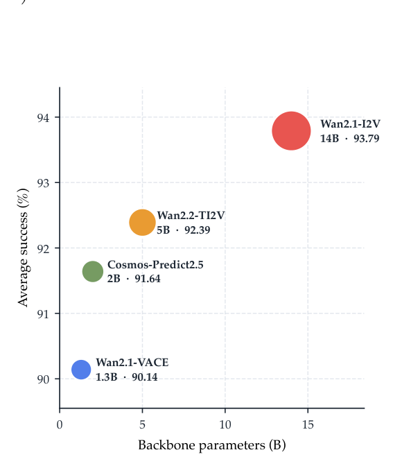
这组比较支持“骨干选择很重要”：所测较强骨干带来了更高控制表现。作者选择 5B 是因为它距离 14B 只有 1.40 个百分点，而训练和部署成本更可控。论文也明确说明模型同时在架构、预训练数据和目标上有差异，因此不能仅凭这四个点归因于参数数量，更不能外推成参数翻倍必然提高多少成功率。（论文 §4.1.1，第 11 页。）
图 7 进一步替换视觉编码器，并让 DiT 随机初始化，比较 latent 本身是否适合学习：
| 视觉编码方案 | 平均成功率 |
|---|---|
| DINOv3，无 S-VAE | 76.42% |
| V-JEPA 2.1，无 S-VAE | 80.91% |
| FLUX.2 VAE | 84.26% |
| V-JEPA 2.1，经 S-VAE 压缩 | 88.46% |
| DINOv3，经 S-VAE 压缩 | 90.18% |
| Wan2.2 VAE | 90.30% |
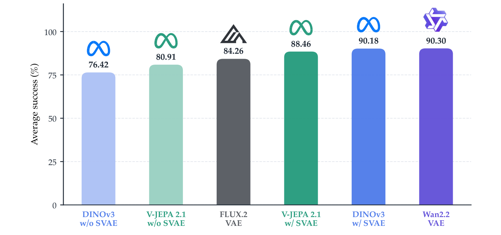
重建型编码器的特征为了恢复画面服务；DINOv3、V-JEPA 这类表示型编码器的特征更强调可预测或语义结构。直接把很宽的特征交给原本面向压缩 latent 设计的 DiT，会改变输入输出维度和学习难度。论文中 DINOv3 为 768 维、V-JEPA 为 1024 维；S-VAE 将它们压到 48 维，再进行世界—动作建模，表现明显改善。为对齐时间尺度，非原生时间压缩编码器还对连续四帧特征求平均，匹配 Wan 的时间压缩设定。
这个实验的技术含义是：更多特征维度并不自动带来更好动作。一个表示即使语义丰富，如果与预测网络的容量和生成目标不匹配，也可能更难学习。经压缩的 DINOv3 与 Wan2.2 VAE 在该实验上非常接近，差 0.12 个百分点。这个结果支持继续探索表示型 latent，并不能证明某类编码器在所有任务上胜出。Wan 的时间压缩是学习得到的，而其他编码器这里是特征平均；这一残余差异也限制了因果解释。（论文 §4.1.2，第 12—13 页。）
13.3 为什么最终给动作分配独立网络
论文表 1 比较六种架构变体，其中 joint cross-attention 又分别测试允许梯度回传和 detach 视频特征，因此共有七行：
| 系统 | 变体 | Clean | Randomized | 平均 |
|---|---|---|---|---|
| 单流 | Vanilla | 85.20 | 85.80 | 85.50 |
| 单流 | MoE | 86.22 | 83.04 | 84.63 |
| 双流 | Joint Self-Attention | 92.34 | 92.38 | 92.36 |
| 双流 | Joint Cross-Attention | 87.86 | 88.64 | 88.25 |
| 双流 | Detached Cross-Attention | 92.06 | 91.64 | 91.85 |
| 双流 | IDM | 87.76 | 88.14 | 87.95 |
| 三流 | Joint Self-Attention | 92.84 | 92.36 | 92.60 |
单流让视频和动作主要共享变换；MoE 为部分计算分配模态专用专家；双流给动作独立主干，同时在指定位置交换特征；IDM 通过世界特征推断动作；三流额外引入理解分支。独立动作容量的直觉是：视频建模需要解释大范围外观和运动，动作建模需要拟合少量但精确的控制数值，这两种要求未必能完全由同一组参数兼顾。
表中的双流 joint self-attention 与三流表现最好，但三流只比前者高 0.24 个百分点，复杂度却更高；作者因而用双流进行后续实验，以便控制额外理解特征的影响。detach 的改善也说明“允许更多梯度路径”不总等于“优化更容易”；不同目标经过共享特征的梯度可能有相互干扰。实验提供了选择依据，并未证明固定某一条梯度路径会在所有设置下更好。（论文 §4.2.1，第 13 页。）
13.4 视频与动作互相看到什么：信息流实验的准确读法
论文表 2 的结果如下。这里的模式名主要区分未来视频特征与动作特征能否互相读取。公开实现中四种模式的动作 token 都能读取干净首帧，因此 Isolated 仍有当前视觉条件，见 mask_modes.py:75。
| 跨流可见性 | 直观解释 | Clean | Randomized | 平均 |
|---|---|---|---|---|
| Isolated | 未来视频与动作互不读取；动作仍读首帧 | 88.08 | 86.74 | 87.41 |
| Video Sees Action | 未来视频读动作；动作只读首帧 | 87.92 | 87.34 | 87.63 |
| Action Sees Video | 动作读首帧与未来视频；未来视频不读动作 | 92.98 | 91.80 | 92.39 |
| Mutual | 未来视频与动作双向读取；动作也读首帧 | 92.50 | 91.80 | 92.15 |
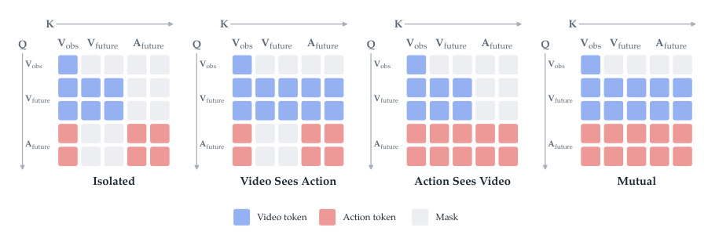
约五个百分点的主要差别来自“动作能否读取未来视频特征”。动作只读取干净首帧时，仍能获得当前视觉信息，但无法直接利用世界流正在形成的未来表示。这一对照支持未来世界特征对动作生成的价值。反向的动作→未来视频通路在这一组没有具身预训练的实验里只带来很小变化，Mutual 比单向低 0.24 个百分点。四种模式都保护干净首帧：首帧 token 不读取有噪未来视频或动作，防止当前视觉条件被这些特征反向污染。
加入具身预训练后，图 11 中的对应差异变为：Full 平均提升 0.16 个百分点，Clean2Random 的 ID 提升 0.70、OOD 提升 0.72，方向都偏向 Mutual。作者将其解释为更多动作—视频对应数据支持了双向交互：未来画面指导控制，动作也帮助世界流形成更一致的机械臂运动。这个机制解释与结果相符，但这些小差异没有在图中给出完整的不确定性区间，适合表述为“在所测设置下稳定偏好”，不宜放大成普适严格优势。（论文 §4.2.2、第 14 页；§4.3.3、第 16 页。）
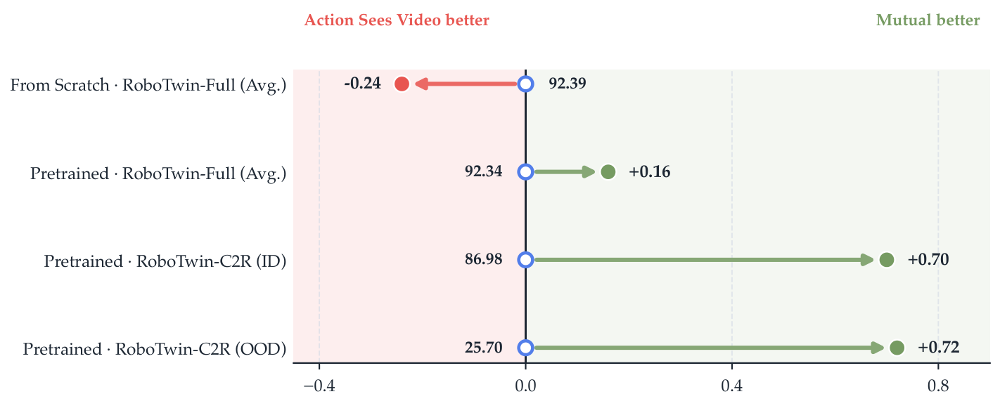
推理调度的图 9 固定 Mutual，比较同步去噪、视频领先和动作领先。同步路径为 93.0%；其余被测试的 variance-shift 和 linear-offset 路径均低一些，部分动作明显领先的路径降到 88.5%。一条流过早变得干净，会改变另一流获取信息的条件。训练虽覆盖二维噪声平面，有限步数的实际求解仍受路径影响。α 因此选择同步去噪；这只说明它在当前训练配方、步数和任务下优于这些被测路径，不能推导异步去噪没有价值。（论文 §4.2.3，第 14 页。）
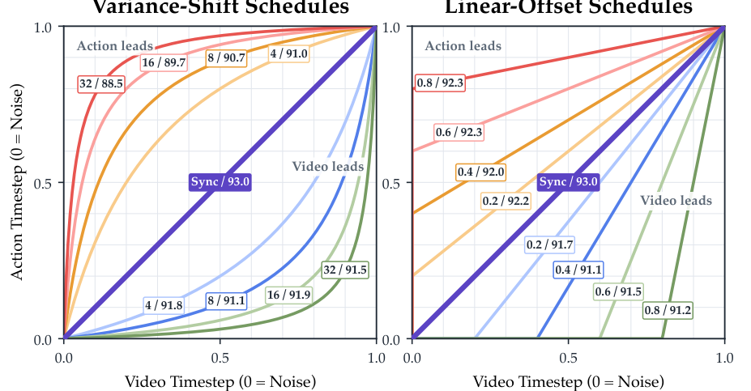
13.5 人类视频与机器人轨迹的互补性
具身预训练消融将预算固定为 600 小时。Robot Only 使用 600 小时机器人数据；两种混合方案均为 350 小时 EgoDex 加 250 小时 RoboCOIN，区别是先后两阶段训练还是一起训练。这里的 EgoDex 是 Study 的受控小规模实验数据，不能与最终 α 的自建人类视频源混为一谈。
| 具身预训练方式 | Clean→Clean，ID | Clean→Random，OOD |
|---|---|---|
| 不进行具身预训练 | 87.00% | 14.50% |
| Robot Only | 88.50% | 23.80% |
| Ego→Robot，两阶段 | 87.10% | 26.50% |
| Ego+Robot，一阶段混合 | 87.68% | 26.62% |
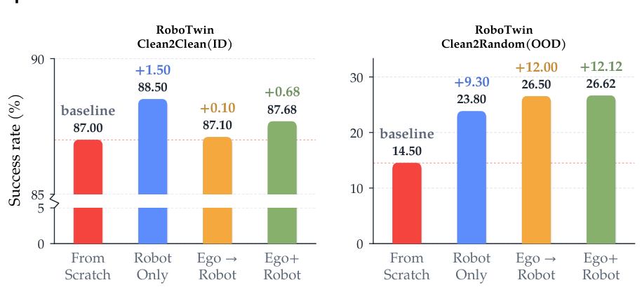
混合训练相对无具身预训练的 ID 提升只有 0.68 个百分点，OOD 提升却是 12.12 个百分点。这个差别说明它在实验中主要扩展了迁移能力，而不仅是把已经接近饱和的 Clean 任务拟合得更好。机器人轨迹提供精确的可执行动作，人类视频扩展物体、场景和交互外观，但不提供机器人电机标签。两阶段与混合方案 OOD 只差 0.12 个百分点，作者选择一阶段混合还考虑到流程简单，不能仅凭这个差值断言课程顺序已经没有作用。（论文 §4.3.1—4.3.2，第 15 页。）
14 最终 α 的数据规模、清洗与证据边界
14.1 518.5M 帧与 6,369 小时分别统计什么
论文表 4 报告先清洗再按预算抽取的五源混合：
| 数据源 | 类型 | 原始 FPS | 实际使用帧数，百万 | 实际使用小时 | 论文所列份额 |
|---|---|---|---|---|---|
| 自建第一视角操作视频 | 人类视频 | 30 | 155.7 | 1,442 | 30.1% |
| AgiBotWorld-Beta | 真实机器人 | 15 | 96.9 | 1,794 | 18.6% |
| RoboCOIN | 真实机器人 | 30 | 74.1 | 686 | 14.3% |
| DROID | 真实机器人 | 10 | 36.3 | 1,007 | 7.0% |
| InternData-A1 | 仿真机器人 | 30 | 155.5 | 1,440 | 30.0% |
| 合计 | 21 种机器人本体，加人类 | 不同 | 518.5 | 6,369 | 100.0% |
单项按表中精度四舍五入，因此逐项求和可能与总数相差 0.1。原始收集池为 1,333.9M 帧、14,348 小时；实际训练量经过质量过滤与预算抽样，不能把原始池大小当作模型实际见过的数据量。
预算先按帧数确定：人类视频和仿真各约 30%，真实机器人合计约 40%；真实三源之间再按清洗后的有效帧数分配。因为 FPS 不同，30% 帧不等于 30% 小时。DROID 的 10 Hz 记录每小时帧数较少，所以 7% 的帧预算可以对应约 1,007 小时。按小时与按帧数平衡会得到不同的数据暴露比例。
论文描述在各源内部将小时预算分配给子数据集，再以固定种子按完整 episode 抽取。随后按最终样本数量比例训练，一轮遍历覆盖保留的样本。这里“样本”是读取器生成的窗口，不应直接等同于表中的独立原始帧；重叠窗口会反复引用同一原始帧。公开 mixture 实现:21支持 proportional、manual 等方式；当前配置 weight_strategy: proportional 时，子源的 weight: 1.0 不表示四源等比例。
自建人类数据源有 71.6K 条较长第一视角录制，覆盖 3,006 种日常操作任务。它增加世界流能见到的操作外观，动作与状态通道被 mask；真实机器人数据覆盖 17 个物理平台，提供动作与环境的对应；仿真补充多种单臂、双臂任务和环境变化。这是作者对数据职责的划分，具体收益仍要通过下游评测验证。（论文 §5.2.1，第 19 页。）
14.2 数据清洗为什么属于技术配方
一个模型若反复见到“命令在动，但画面永远不变”或“视觉和动作错开半秒”，就可能学到错误关联。增加这种数据甚至可能抵消扩大数据量的收益。论文 §5.2.2、第 20 页把清洗分成视觉层面与机器人信号层面。
视觉层面对所有来源检查解码失败、冻结或重复帧、全黑全白等纯色图、曝光异常与闪烁、模糊、突变。人类第一视角数据还删除手长时间不在画面中的无操作片段，以及语言标注为空或无效的录制。这些规则为了提高视觉片段携带的操作信息，不意味着每张画面都一定包含可直接推断的机器人动作。
机器人信号层面有四类检查。第一，检查命令与状态是否跟踪一致，以及视觉与信号是否同步；论文列出的整段删除条件包括幅度比达到三倍且每轴相关性低于 0.5，或视觉—信号错位超过 2% 帧。第二，以状态为主识别开头和结尾的闲置段，结合按机器人校准的单帧变化阈值，并用平均末端平移速度低于 2 cm/s、旋转速度低于 5°/s 确认；中间暂停保留，避免把原本不相邻的片段拼成不存在的连续运动。第三，将状态运动与各相机视觉运动交叉检查，区分传感器抖动和采集冻结。第四，删除清洗后损失超过 70% 帧，或视觉冻结占比达 90% 的整段录制。
这些是论文报告的清洗协议，不是所有公开读取器每次 __getitem__ 都现场执行的操作。复现时需要判断过滤发生于离线清洗、manifest 构建、预算抽取，还是在线采样；只运行训练入口，不会自动得到与论文一样的数据总体。
14.3 成绩怎样支持能力判断，也怎样限制结论
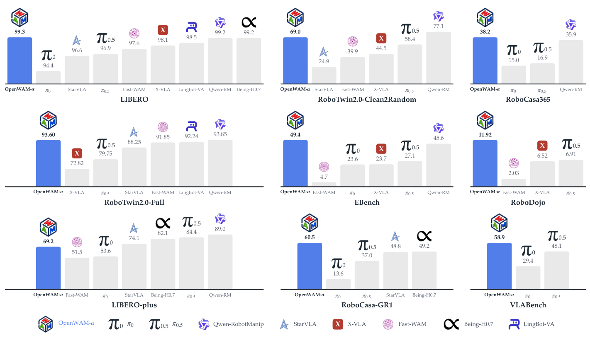
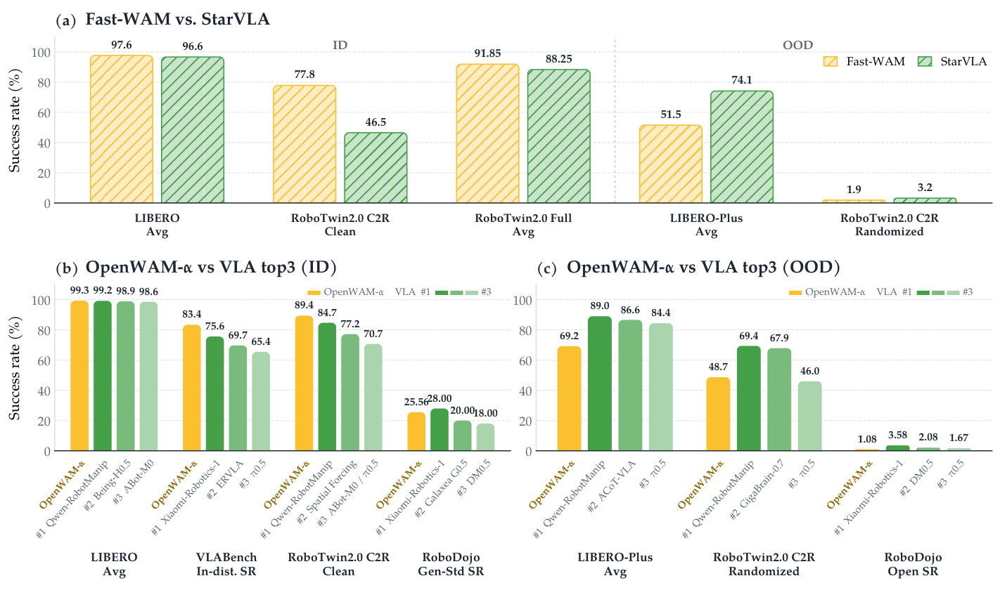
最终 α 在原始 LIBERO 达到平均 99.3%（表 13），RoboTwin-Full 为 93.60%（表 16）。这表明在有足够相应任务示范的条件下，它能形成很强的动作策略。单臂实机六任务合计为 99/120，即 82.5%，高于同表的 LingBot-VA 77.5% 和 π0.5 55.0%（表 6）。其中叠环仅为 12/20，两个放入抽屉任务各为 20/20；平均值不代表每个精细动作都已稳定解决。
泛化表现更不均衡。RoboTwin Clean2Random 的 Clean 为 89.4%、Randomized 为 48.7%；同表 Qwen-RobotManip 的 Randomized 为 69.4%。LIBERO-Plus 总均分为 69.2%，其中相机扰动只有 33.8%、噪声扰动为 39.8%，语言和灯光扰动分别为 88.0% 与 97.0%。必须同时看到强项和弱项，才能判断某个新任务与模型现有覆盖是否接近。（论文 §5.3、第 20—23 页；表 5、15。）
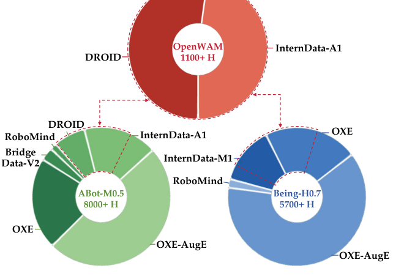
作者提出两个解释。数据上，α 的单臂来源主要是 DROID 与 InternData-A1 的单臂部分，规模和相机变化不如部分对比模型；架构上，预测像素重建 latent 的多帧未来，对视角和噪声变化较敏感。相机一移动，同一个物理抓取过程会对应大范围像素变化；画面噪声又增加与控制无关的预测负担。更强调语义的表示，可能把“物体依然在夹爪前方”保留下来，同时弱化像素级扰动。
这种解释有对照结果支持，但不同模型的数据、架构、训练方法同时变化，仍不是对单一原因的完全隔离实验。论文同样指出若干 WAM 在 LIBERO-Plus 上表现强，所以不能将 OpenWAM-α 的薄弱项推广为“所有世界—动作模型都无法适应相机变化”。更合理的技术判断是：未来预测是否有帮助，取决于表示保留了哪些控制相关信息、预训练覆盖了哪些变化，以及模型如何把这些信息传到动作分支。
论文附录 A 还明确列出未充分探索的方向：后训练和适配方法，更早的模态融合或软路由 MoE，具有更丰富可执行动作的 UMI 类数据，以及更紧凑、对视角和场景扰动更稳定的编码表示。这些限制说明 α 是经实验选择的一个有效配方，并不是世界—动作建模的最终形态。
15 本工作区的 Bench2Dex 接入应如何理解
当前工作区同时有论文原始实现、公开配置，以及为本地机器人任务添加的适配。阅读时应分清依据：论文报告的是其正式实验；公开仓库提供可组合基础设施和若干默认参数；本地 Bench2Dex 文件记录的是此工作区后续进行的数据转换与训练。后者没有进入论文的基准结论。
一个直接例子是 公开 pretrain mixture:9只列 AgiBotWorld、RoboCOIN、DROID、InternData-A1 四个机器人源，而论文最终配方含自建人类视频五源。运行这个默认 mixture，不足以宣称完整复现了论文的 30/40/30 配方。另一个例子是下游 α 指南的固定 80 维接口与框架支持修改动作维度并不矛盾：框架允许各种实验，但重设动作维度通常会改变预训练输入输出投影的兼容性。
本地 task 86 为双 KUKA iiwa7 加双 Sharpa 手的短拼图任务。源数据记录实际关节角 robot/qpos 与绝对关节目标 action/commanded。为了使用 α 的末端及灵巧手槽位，转换器分别计算：
这里 FK 是正向运动学：根据机器人 URDF 和机械臂关节角，算出手掌参考坐标系的位置与旋转。命令与状态分别做 FK，保留了“希望到哪里”与“目前在哪里”的区别。两臂位姿都在 link_0 参考系中，左右手掌末端定义也固定在文档中。task 86 数据约定:13给出这些细节。
原始机器人有 58 个关节，其中每手有两个禁用控制关节，实际有效手指控制各 20 维。转换后的紧凑表示为 [左xyz3,左rot6d6,左手20,右xyz3,右rot6d6,右手20]，仍是 58 维，但与原始“58 个关节角”的物理意义不同。它映射到 α 的 0:9、10:30、34:43、44:64；夹爪槽位、剩余手指槽位和预留槽位均不监督。具体配置见 bench2dex_task86_alpha.yaml:1。
task 86 的时间契约为 20 Hz、state[t]、commanded[t:t+32]，视频取 t:t+33:4，覆盖 1.6 秒。不能沿用 RoboTwin 的 raw_actions[1:] 再右移一次。它使用训练集 min-max 统计量，动作与状态分别统计，rot6d 恒等，随后散射至 80 维。数据划分按源轨迹编号分组，避免同一源轨迹及其变体同时进入训练与验证。
文档还记录了一项实际数据问题：腕部相机位姿元数据比状态晚一行匹配，即 camera_pose[t+1] 与 FK(qpos[t]) 一致。这只能证明元数据的几何对齐规律，不能自动证明 RGB 图像也晚一帧，因此适配保留原始 RGB 行对应，并要求正式仿真复现前单独核对腕部视图同步。这个例子展示了数据核验的边界：一种信号的时间偏移，不能未经检查推广到所有信号。详细审查记录:56。
完成这类转换并观察训练 loss 下降，只能证明指定数据接口和学习过程可以运行；它不等于得到机器人成功率。真正验证还需要部署时将模型的末端输出正确转换成机器人可执行的控制命令，并在隔离的任务环境里进行闭环评测。论文中的实机结果可解释方法潜力，本地 task 86 的效果需要其自己的实验结果来支持。
16 把整套原理落实到一条真实控制链
假设你为双臂灵巧手采集了一条演示。要把它送进 α，首先确认记录的是“实际测量状态”还是“下发给控制器的命令”。二者可能存在滞后和误差，分别承担观测条件和监督目标。若原始命令是关节角而模型使用末端位姿，就分别对命令关节与测量关节做 FK；随后明确坐标系、末端 link、旋转顺序、手指顺序与单位。数据来源不同，这些约定不能由80D宽度自动推断。
从起点选择33个原始时刻，按数据源的动作定义对齐32个目标；图像取9个时刻，每个时刻拼出相同的三视角画布。原生动作、状态各自按训练集统计归一化，rot6d保留几何意义，再按映射散射到80维并生成mask。VAE将视频编码成 [48,3,24,20]，文字变成context，状态进入额外context token。未来视频和动作分别加噪，模型经过30层联合计算预测两路速度，mask后的误差经反向传播改变参数。
部署时，从当前图像独立得到首帧latent，当前状态经过同样的坐标、归一化和槽位处理。生成循环得到32步动作，先gather再反归一化。若下游控制器只接受关节角，还需要将末端目标经IK转换成关节目标，再结合手指命令交给控制器。用当前关节状态作为IK种子可以帮助保持分支连续，但不能保证精确复原训练前的每一个关节角：7自由度手臂的6自由度末端位姿丢失了冗余姿态信息。
这条链中的每一项都可独立出错。模型loss下降只说明它在当前数值约定下改善了拟合；如果坐标系写反、动作整体错位一帧、夹爪开合方向颠倒或部署统计不同，低loss并不保证机器人正确动作。检查应先从同一条示范的读取、变换、逆变换和回放入手，再评价模型泛化。
16.1 一个小型数值例子：有效维度怎样影响损失
为方便手算，把80维缩成4维，设某机器人的有效坐标只有第0和第2维。真值clean动作是 ，高斯噪声的某次抽样为 ，取 。加噪输入是
假设模型预测 ，四维平方误差分别为 。有效mask为 ，所以这个时刻的有效元素平均误差是 ，不会把未占用槽位的误差计进去。
但注意，未占用坐标在当前加噪输入中并不是0，而是 。这是训练定义的结果。部署若直接用未监督的预测9和−4更新这些坐标，会让它们偏离训练时的解析噪声轨迹；源码才需要把无效坐标固定回 。这个例子把“输入有噪声”“该坐标没有直接监督”“推理需要维持对应路径”三件事连了起来。
16.2 代码阅读路线：按调用关系阅读，不必从最大的文件第一页开始
| 想验证什么 | 最短入口 | 阅读时核对什么 |
|---|---|---|
| α用哪种架构 | dual_system.yaml:1 | variant、80D、mutual、首帧mask |
| 一条样本是什么 | α微调数据契约:11 | video、action、proprio与各类mask |
| 真实样本怎样切 | RoboTwin读取器:748 | 视频stride和动作索引分别处理 |
| 线性层和层内子模块 | ActionDiT:390 | in/out投影、cross-attention、FFN |
| 两流在哪里相遇 | MoT driver:191 | 沿token轴拼QKV、SDPA、拆分 |
| 谁能读取谁 | mask_modes:57 | query是行，key是列，首帧例外 |
| 训练一次算什么 | compute_loss:1044 | 独立时间、noise−data、损失归约 |
| 推理怎么更新 | generate:1361 | schedule、Euler、pinning、反归一化 |
| 动作如何回到物理量 | _UnifyAwareNormalizer:457 | gather→inverse normalization |
| 缓冲与新观测关系 | WAMPolicy:25 | 每请求一动作，不一定每请求重算 |
16.3 三个层次的自测题与答案
建议先遮住答案独立写下来。能把结果算出来，通常比能复述“多模态联合生成”更能检验理解。
题1：80维动作是否意味着80个token？ 答案：不是。32个未来控制时刻产生32个动作token，每个时刻的80个物理坐标经同一输入投影变成1024维隐藏特征。80、32、1024分别是物理坐标宽度、序列长度、网络隐藏宽度。
题2：为什么视频token数是360？ 答案：9张384×320图经Wan2.2 VAE得到3个24×20的latent时间片，每片再按2×2做patch，故 。先数据采样33→9，再VAE时间压缩9→3；两者不能合并误认为对动作也做了16倍降采样。
题3：一个动作query能读360个视频token，为什么不会输出360个动作？ 答案：attention输出行数等于query行数；一行query对所有key计算一行概率，再把所有value加权成一行结果。32个动作query仍得到32行输出。
题4：将第三个key mask后，前两个softmax权重为什么也改变？ 答案：softmax分母只包含未被屏蔽位置的指数和。保留权重重新归一化，因此它们通常变大，不是简单删掉原来的第三项。
题5：isolated下动作完全看不到图像吗？ 答案：当前实现仍允许动作读取干净首帧。它关闭动作读取未来视频、未来视频读取动作的交互。读到当前图像与读到未来视觉表示是两个不同条件。
题6：只把首帧从视频loss去掉，能保证它不受未来噪声污染吗？ 答案：不能。若它仍能读取未来token，层内表示会变化。输入固定、干净时间条件、首帧注意力mask和每次更新重新固定共同保证这一约束。
题7：论文t=0.2，代码sigma是多少，若预测论文速度为3，代码速度是多少？ 答案：，代码速度为−3。若下一步论文时间加0.1，则sigma减0.1，两种写法都使样本增加0.3。
题8：为什么训练一个batch不需要生成完10步动作？ 答案：flow matching直接监督随机噪声状态处的速度，目标由真值和采样噪声算出。推理才需要多次查询速度并积分；训练的单状态回归让这些查询可用。
题9：有32步动作chunk是否表示每32步才能反馈？ 答案：预测长度由模型样本契约决定，执行多少步由inference_horizon等执行设置决定。可以预测32步只执行一部分再重算，但代价是更频繁推理。
题10：人类视频没有动作标签，为什么不能说动作分支完全不训练？ 答案：没有直接动作loss不自动删除动作分支。在mutual前向中，视频预测可读取动作特征，视频loss可能沿这条路径回传到部分动作参数；同时并非所有参数必然每步都收到非零梯度。
题11：为什么同一机器人训练部署都写80D，仍可能完全错？ 答案：宽度相同不能证明槽位、左右顺序、单位、参考系、绝对/增量语义、归一化统计或时间对齐相同。接口需要逐项对应物理意义。
题12：视频生成看起来清楚，为什么任务仍可能失败？ 答案：视觉逼真度不等于控制准确性。微小接触位置误差、夹爪时机、不可见接触力或控制器差异都可能影响成功。模型的联合目标鼓励对应，不给出任务成功或物理一致性的形式保证。
16.4 进一步研究时，可以把问题拆成可验证的实验
如果你准备基于OpenWAM研究触觉，原有接口能帮助组织数据与网络，但现有α没有专门预测触觉或接触力的流。应先明确触觉是当前条件、未来预测目标，还是更高频的控制反馈；再决定如何编码、怎样设置可见性、哪些样本有触觉标签，以及传感器缺失时如何mask。仅把压力数字塞进预留槽位，会改变这些槽位承担的语义与监督，不能直接称为已经得到一个触觉世界模型。
比较新设计时，固定机器人数据、微调预算与评测设置，分别检查当前触觉条件的收益、未来触觉监督的收益和额外数据的收益。先用无触觉α建立可回放的动作基线，再一次改变一个因素。这个研究建议来自本报告对计算结构的分析，不属于原论文已经验证的实验结论。
17 符号、来源与版本记录
| 符号或术语 | 在本报告中的含义 |
|---|---|
| batch大小；样本之间不互相做attention | |
| （动作上下文中） | action horizon，标准为32 |
| （图像形状中） | 图像高、宽，标准384、320 |
| 视频与动作token数，标准360、32 | |
| 当前机器人本体状态；不同于attention query矩阵 | |
| 查询、键、值；不是视频的缩写，也不是flow速度 | |
| 论文正文干净度时间，0为噪声，1为数据 | |
| 代码噪声时间，1为噪声，0为数据； | |
| 神经网络接收的timestep数值，Wan/动作路径通常为 | |
| flow velocity | 数据空间中随去噪时间变化的方向；不直接等于末端的米/秒速度 |
| mask | 必须指明是attention可见性、监督有效性、状态有效性还是文本padding |
| latent | 经编码器压缩的表示；不能把每一维当成直接可解释物理量 |
| bridge | 两条流交换中间特征的位置或层 |
| checkpoint | 模型及配套配置/资产；完整恢复训练还需要优化器、调度器、RNG等状态 |
主要来源为论文PDF、arXiv论文页面、官方仓库与当前工作区源码。核心论证位置：§3.1–3.4是模型和运行协议，§4.1–4.3是设计消融，§5.1是α架构及训练/部署，§5.2是数据，§5.3–5.4是评测，附录A是局限性，附录B是超参数。
图像源与裁剪坐标保存在 figures/original/manifest.json；自绘图说明保存在 figures/explanatory/manifest.json。构建脚本保留公式列表、代码引用与文件哈希，便于对照后续仓库更新。原图中的成功率是论文报告值；自绘的分数、轨迹和局部数值是公式推导或明确标注的教学例子。
阅读本报告时，能由源码直接确定的是运算、形状、mask、采样及执行规则；作者关于“为什么泛化更好”的解释需要放回相应实验条件理解。未来表示与动作联合训练建立的是统计联系，它并不自动证明模型具有可用于任意反事实干预的准确物理模拟器。要使用世界预测进行候选动作搜索、奖励优化或新的闭环规划，仍需定义额外接口与验证方法。
交互教学：让 attention 的每一步都看得见
改变 query 的两个分量，或屏蔽任一 key，观察分数、softmax 权重与输出怎样变化。K/V 使用正文手算例子，所有数字在本地浏览器计算。
| 读取位置 | Key | Value | 权重大小 |
|---|---|---|---|
| 1 | [1, 1] | [2, 0] | |
| 2 | [1, −1] | [0, 4] | |
| 3 | [−1, −1] | [10, 10] |
这个演示从已经完成投影与位置编码的 Q/K/V 开始。它展示单个头的一行计算，不模拟整套 Transformer。PDF 中保留的是初始状态；操作请使用同目录的 HTML 版本。
交互教学：噪声水平与加噪输入
教学真值 x=2，固定噪声 ε=−1。代码使用 xσ=(1−σ)x+σε，速度目标 ε−x=−3。移动噪声水平，观察输入位置；它的横坐标是去噪进度，不是机器人执行时刻。
这里为教学显式给出真值。真实推理没有未知未来真值可用，神经网络必须根据当前带噪样本、条件和时间估计速度。